Iozone results for bkwdrd, data are arranged by file size
- Baseline data set
- ./ext4/ext4_1.iozone
- ./ext4/ext4_2.iozone
- ./ext4/ext4_3.iozone
- ./ext4/ext4_4.iozone
- ./ext4/ext4_5.iozone
- Investigated data set
- ./xfs/xfs1.iozone
- ./xfs/xfs2.iozone
- ./xfs/xfs3.iozone
- ./xfs/xfs4.iozone
- ./xfs/xfs5.iozone
mean => Arithmetic mean
standar dev. => Sample standard deviation
ci. max 90%, ci.min => confidence interval at confidence level 90% => it means that mean value of the distribution lies with 90% propability in interval ci_min-ci_max
geom. mean => Geometric mean
median => Second quartile = cuts data set in half = 50th percentile
first quartile => cuts off lowest 25% of data = 25th percentile
third quartile => cuts off highest 25% of data, or lowest 75% = 75th percentile
minimum => Lowest value of data set
maximum => Hightest value of data set
baseline set1 difference => Difference of medians of both sets in percennt. Arithmetic means are used in detail mode instead.
ttest p-value => Student's t-test p-value = probability the both data sets are equal
ttest equality => If p-value is higher than 0.1, data sets are considered being equal with 90% probability. Otherwise the data sets are considered being different.
Linear regression of all results regression line is in y = ax form, b coeficient is zero.
for details about operations performed see Iozone documentation
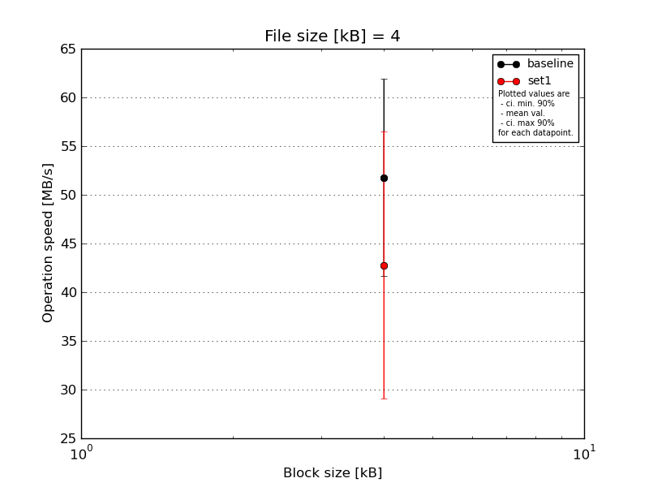
|
File size [kB] |
Block size [kB] |
| 4 |
| baseline | 4 | 39.5 |
| 4 | 43.95 |
| 4 | 66.12 |
| 4 | 52.04 |
| 4 | 57.33 |
| mean val. |
51.79 |
| standard dev. |
10.59 |
| ci. min. 90% |
41.69 |
| ci. max 90% |
61.88 |
| geom. mean |
50.92 |
| median |
52.04 |
| first quartile |
43.95 |
| third quartile |
57.33 |
| minimum |
39.5 |
| maximum |
66.12 |
| set1 | 4 | 47.65 |
| 4 | 48.21 |
| 4 | 17.2 |
| 4 | 52.04 |
| 4 | 48.79 |
| mean val. |
42.78 |
| standard dev. |
14.4 |
| ci. min. 90% |
29.05 |
| ci. max 90% |
56.51 |
| geom. mean |
39.84 |
| median |
48.21 |
| first quartile |
47.65 |
| third quartile |
48.79 |
| minimum |
17.2 |
| maximum |
52.04 |
| baseline set1 difference |
-17.39 % |
| ttest p-value |
0.2926 |
| ttest equality |
SAME |
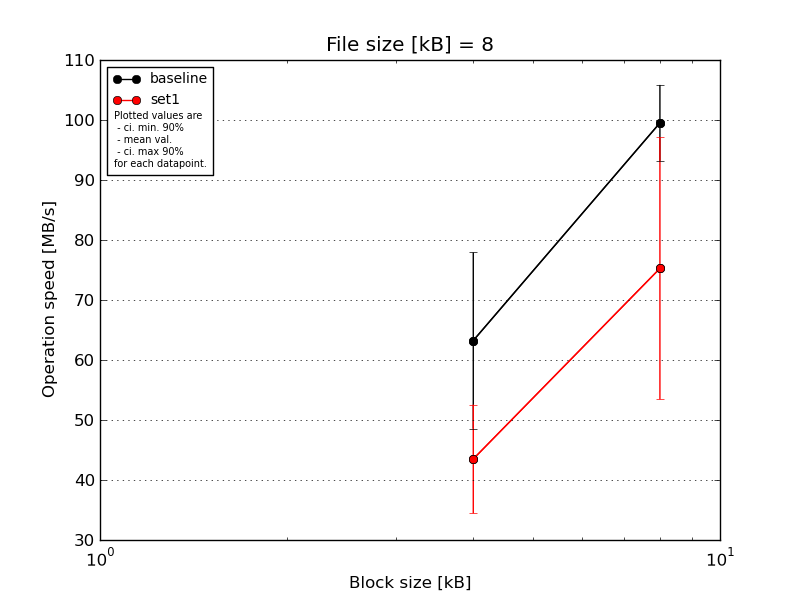
|
File size [kB] |
Block size [kB] |
| 4 |
8 |
| baseline | 8 | 70.35 | 110.03 |
| 8 | 67.31 | 98.76 |
| 8 | 71.73 | 100.27 |
| 8 | 35.86 | 92.09 |
| 8 | 70.96 | 96.43 |
| mean val. |
63.24 |
99.52 |
| standard dev. |
15.4 |
6.64 |
| ci. min. 90% |
48.56 |
93.19 |
| ci. max 90% |
77.92 |
105.85 |
| geom. mean |
61.28 |
99.34 |
| median |
70.35 |
98.76 |
| first quartile |
67.31 |
96.43 |
| third quartile |
70.96 |
100.27 |
| minimum |
35.86 |
92.09 |
| maximum |
71.73 |
110.03 |
| set1 | 8 | 52.78 | 80.55 |
| 8 | 50.04 | 38.88 |
| 8 | 43.94 | 82.37 |
| 8 | 28.3 | 101.51 |
| 8 | 42.46 | 73.01 |
| mean val. |
43.5 |
75.26 |
| standard dev. |
9.5 |
22.89 |
| ci. min. 90% |
34.44 |
53.44 |
| ci. max 90% |
52.56 |
97.09 |
| geom. mean |
42.55 |
71.83 |
| median |
43.94 |
80.55 |
| first quartile |
42.46 |
73.01 |
| third quartile |
50.04 |
82.37 |
| minimum |
28.3 |
38.88 |
| maximum |
52.78 |
101.51 |
| baseline set1 difference |
-31.21 % |
-24.37 % |
| ttest p-value |
0.0406 |
0.0525 |
| ttest equality |
DIFF |
DIFF |
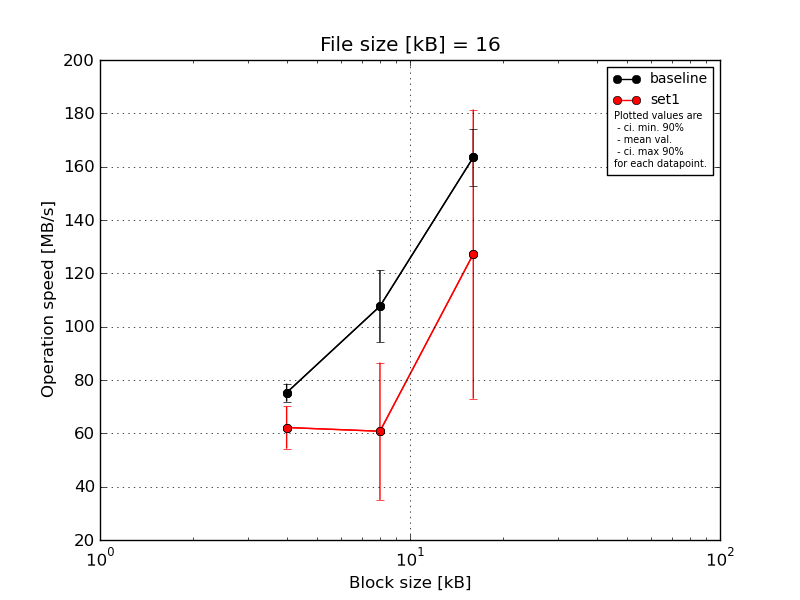
|
File size [kB] |
Block size [kB] |
| 4 |
8 |
16 |
| baseline | 16 | 78.88 | 112.45 | 175.79 |
| 16 | 72.35 | 89.8 | 169.87 |
| 16 | 79.36 | 127.05 | 157.99 |
| 16 | 72.67 | 110.18 | 147.34 |
| 16 | 73.0 | 98.88 | 166.42 |
| mean val. |
75.25 |
107.67 |
163.48 |
| standard dev. |
3.54 |
14.16 |
11.09 |
| ci. min. 90% |
71.87 |
94.17 |
152.91 |
| ci. max 90% |
78.63 |
121.17 |
174.05 |
| geom. mean |
75.19 |
106.93 |
163.17 |
| median |
73.0 |
110.18 |
166.42 |
| first quartile |
72.67 |
98.88 |
157.99 |
| third quartile |
78.88 |
112.45 |
169.87 |
| minimum |
72.35 |
89.8 |
147.34 |
| maximum |
79.36 |
127.05 |
175.79 |
| set1 | 16 | 69.73 | 108.54 | 173.46 |
| 16 | 55.97 | 42.23 | 66.82 |
| 16 | 58.95 | 49.28 | 63.76 |
| 16 | 53.9 | 50.38 | 157.99 |
| 16 | 72.35 | 53.51 | 173.92 |
| mean val. |
62.18 |
60.79 |
127.19 |
| standard dev. |
8.34 |
27.01 |
56.88 |
| ci. min. 90% |
54.23 |
35.04 |
72.96 |
| ci. max 90% |
70.13 |
86.54 |
181.42 |
| geom. mean |
61.74 |
57.14 |
115.22 |
| median |
58.95 |
50.38 |
157.99 |
| first quartile |
55.97 |
49.28 |
66.82 |
| third quartile |
69.73 |
53.51 |
173.46 |
| minimum |
53.9 |
42.23 |
63.76 |
| maximum |
72.35 |
108.54 |
173.92 |
| baseline set1 difference |
-17.37 % |
-43.54 % |
-22.2 % |
| ttest p-value |
0.0121 |
0.0089 |
0.199 |
| ttest equality |
DIFF |
DIFF |
SAME |
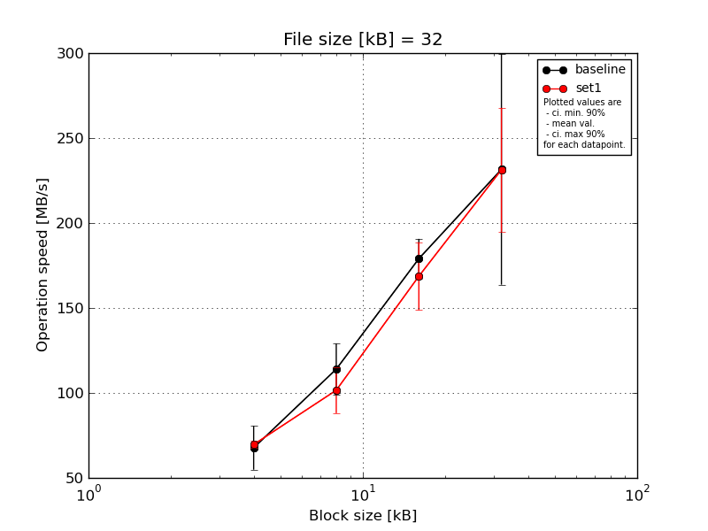
|
File size [kB] |
Block size [kB] |
| 4 |
8 |
16 |
32 |
| baseline | 32 | 81.83 | 134.18 | 191.68 | 260.68 |
| 32 | 54.73 | 106.58 | 170.93 | 276.64 |
| 32 | 51.91 | 111.95 | 172.51 | 267.05 |
| 32 | 73.19 | 124.03 | 167.22 | 247.86 |
| 32 | 76.97 | 93.3 | 192.81 | 105.63 |
| mean val. |
67.73 |
114.01 |
179.03 |
231.57 |
| standard dev. |
13.54 |
15.78 |
12.22 |
71.17 |
| ci. min. 90% |
54.82 |
98.97 |
167.38 |
163.72 |
| ci. max 90% |
80.63 |
129.05 |
190.68 |
299.43 |
| geom. mean |
66.6 |
113.13 |
178.7 |
219.04 |
| median |
73.19 |
111.95 |
172.51 |
260.68 |
| first quartile |
54.73 |
106.58 |
170.93 |
247.86 |
| third quartile |
76.97 |
124.03 |
191.68 |
267.05 |
| minimum |
51.91 |
93.3 |
167.22 |
105.63 |
| maximum |
81.83 |
134.18 |
192.81 |
276.64 |
| set1 | 32 | 66.51 | 120.16 | 201.71 | 283.82 |
| 32 | 72.83 | 97.97 | 149.49 | 253.62 |
| 32 | 69.58 | 107.72 | 168.95 | 228.42 |
| 32 | 69.43 | 100.76 | 171.6 | 195.39 |
| 32 | 69.91 | 81.37 | 151.74 | 195.39 |
| mean val. |
69.65 |
101.6 |
168.7 |
231.33 |
| standard dev. |
2.24 |
14.19 |
20.95 |
38.22 |
| ci. min. 90% |
67.51 |
88.07 |
148.73 |
194.89 |
| ci. max 90% |
71.79 |
115.12 |
188.67 |
267.77 |
| geom. mean |
69.62 |
100.78 |
167.7 |
228.85 |
| median |
69.58 |
100.76 |
168.95 |
228.42 |
| first quartile |
69.43 |
97.97 |
151.74 |
195.39 |
| third quartile |
69.91 |
107.72 |
171.6 |
253.62 |
| minimum |
66.51 |
81.37 |
149.49 |
195.39 |
| maximum |
72.83 |
120.16 |
201.71 |
283.82 |
| baseline set1 difference |
2.84 % |
-10.89 % |
-5.77 % |
-0.1 % |
| ttest p-value |
0.762 |
0.2272 |
0.3686 |
0.9948 |
| ttest equality |
SAME |
SAME |
SAME |
SAME |
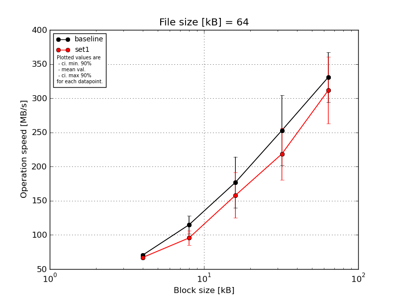
|
File size [kB] |
Block size [kB] |
| 4 |
8 |
16 |
32 |
64 |
| baseline | 64 | 68.9 | 130.43 | 210.42 | 302.08 | 273.98 |
| 64 | 68.02 | 93.43 | 133.28 | 263.78 | 328.99 |
| 64 | 72.68 | 116.83 | 217.76 | 304.89 | 381.13 |
| 64 | 72.16 | 114.48 | 183.86 | 203.56 | 332.33 |
| 64 | 70.13 | 119.27 | 139.45 | 190.54 | 337.9 |
| mean val. |
70.38 |
114.89 |
176.96 |
252.97 |
330.87 |
| standard dev. |
2.02 |
13.47 |
39.2 |
53.77 |
38.14 |
| ci. min. 90% |
68.45 |
102.05 |
139.58 |
201.71 |
294.51 |
| ci. max 90% |
72.3 |
127.73 |
214.33 |
304.23 |
367.23 |
| geom. mean |
70.36 |
114.22 |
173.36 |
248.22 |
329.05 |
| median |
70.13 |
116.83 |
183.86 |
263.78 |
332.33 |
| first quartile |
68.9 |
114.48 |
139.45 |
203.56 |
328.99 |
| third quartile |
72.16 |
119.27 |
210.42 |
302.08 |
337.9 |
| minimum |
68.02 |
93.43 |
133.28 |
190.54 |
273.98 |
| maximum |
72.68 |
130.43 |
217.76 |
304.89 |
381.13 |
| set1 | 64 | 65.59 | 97.21 | 113.0 | 249.94 | 402.8 |
| 64 | 66.77 | 114.03 | 128.58 | 173.17 | 280.13 |
| 64 | 67.71 | 88.03 | 180.07 | 177.03 | 293.29 |
| 64 | 67.79 | 91.38 | 176.55 | 253.08 | 296.27 |
| 64 | 67.0 | 87.3 | 191.79 | 239.44 | 285.62 |
| mean val. |
66.97 |
95.59 |
158.0 |
218.53 |
311.62 |
| standard dev. |
0.89 |
11.03 |
34.87 |
39.99 |
51.36 |
| ci. min. 90% |
66.12 |
85.08 |
124.75 |
180.4 |
262.65 |
| ci. max 90% |
67.82 |
106.1 |
191.24 |
256.66 |
360.59 |
| geom. mean |
66.97 |
95.11 |
154.7 |
215.46 |
308.63 |
| median |
67.0 |
91.38 |
176.55 |
239.44 |
293.29 |
| first quartile |
66.77 |
88.03 |
128.58 |
177.03 |
285.62 |
| third quartile |
67.71 |
97.21 |
180.07 |
249.94 |
296.27 |
| minimum |
65.59 |
87.3 |
113.0 |
173.17 |
280.13 |
| maximum |
67.79 |
114.03 |
191.79 |
253.08 |
402.8 |
| baseline set1 difference |
-4.84 % |
-16.8 % |
-10.71 % |
-13.61 % |
-5.82 % |
| ttest p-value |
0.0086 |
0.0381 |
0.4425 |
0.2837 |
0.5201 |
| ttest equality |
DIFF |
DIFF |
SAME |
SAME |
SAME |
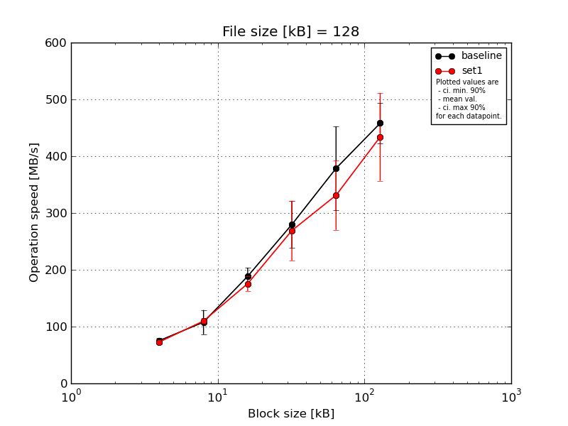
|
File size [kB] |
Block size [kB] |
| 4 |
8 |
16 |
32 |
64 |
128 |
| baseline | 128 | 83.39 | 133.96 | 211.51 | 262.69 | 443.26 | 503.73 |
| 128 | 69.83 | 74.32 | 198.68 | 225.23 | 430.87 | 455.98 |
| 128 | 73.88 | 113.22 | 179.07 | 328.95 | 401.81 | 486.44 |
| 128 | 76.97 | 99.21 | 178.04 | 263.75 | 366.43 | 417.82 |
| 128 | 72.59 | 118.59 | 175.83 | 317.98 | 250.52 | 426.66 |
| mean val. |
75.33 |
107.86 |
188.63 |
279.72 |
378.58 |
458.13 |
| standard dev. |
5.19 |
22.5 |
15.75 |
43.02 |
77.47 |
37.08 |
| ci. min. 90% |
70.39 |
86.41 |
173.61 |
238.71 |
304.72 |
422.77 |
| ci. max 90% |
80.28 |
129.31 |
203.64 |
320.73 |
452.43 |
493.48 |
| geom. mean |
75.19 |
105.81 |
188.11 |
277.05 |
371.17 |
456.93 |
| median |
73.88 |
113.22 |
179.07 |
263.75 |
401.81 |
455.98 |
| first quartile |
72.59 |
99.21 |
178.04 |
262.69 |
366.43 |
426.66 |
| third quartile |
76.97 |
118.59 |
198.68 |
317.98 |
430.87 |
486.44 |
| minimum |
69.83 |
74.32 |
175.83 |
225.23 |
250.52 |
417.82 |
| maximum |
83.39 |
133.96 |
211.51 |
328.95 |
443.26 |
503.73 |
| set1 | 128 | 69.02 | 115.84 | 169.35 | 279.05 | 388.13 | 475.41 |
| 128 | 69.21 | 108.51 | 199.06 | 326.5 | 265.35 | 432.65 |
| 128 | 76.6 | 103.82 | 173.39 | 217.02 | 258.29 | 468.2 |
| 128 | 77.88 | 114.58 | 172.13 | 206.92 | 378.87 | 498.46 |
| 128 | 71.97 | 106.65 | 164.05 | 315.68 | 365.41 | 295.41 |
| mean val. |
72.93 |
109.88 |
175.6 |
269.03 |
331.21 |
434.03 |
| standard dev. |
4.12 |
5.16 |
13.6 |
55.1 |
63.9 |
81.01 |
| ci. min. 90% |
69.0 |
104.96 |
162.63 |
216.51 |
270.29 |
356.79 |
| ci. max 90% |
76.87 |
114.8 |
188.56 |
321.56 |
392.14 |
511.26 |
| geom. mean |
72.84 |
109.78 |
175.2 |
264.38 |
326.01 |
426.91 |
| median |
71.97 |
108.51 |
172.13 |
279.05 |
365.41 |
468.2 |
| first quartile |
69.21 |
106.65 |
169.35 |
217.02 |
265.35 |
432.65 |
| third quartile |
76.6 |
114.58 |
173.39 |
315.68 |
378.87 |
475.41 |
| minimum |
69.02 |
103.82 |
164.05 |
206.92 |
258.29 |
295.41 |
| maximum |
77.88 |
115.84 |
199.06 |
326.5 |
388.13 |
498.46 |
| baseline set1 difference |
-3.18 % |
1.88 % |
-6.91 % |
-3.82 % |
-12.51 % |
-5.26 % |
| ttest p-value |
0.4421 |
0.8496 |
0.199 |
0.7413 |
0.3224 |
0.562 |
| ttest equality |
SAME |
SAME |
SAME |
SAME |
SAME |
SAME |
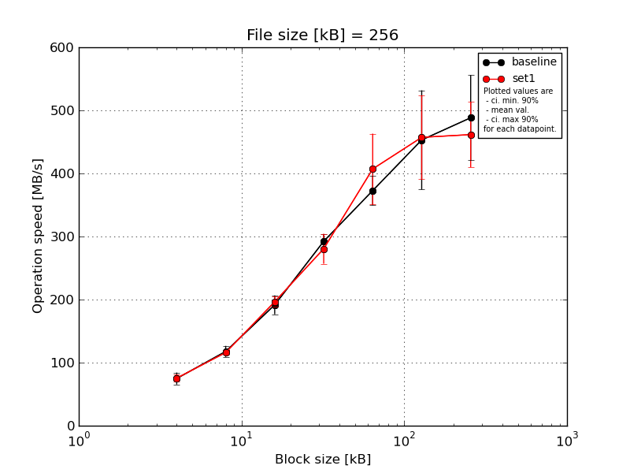
|
File size [kB] |
Block size [kB] |
| 4 |
8 |
16 |
32 |
64 |
128 |
256 |
| baseline | 256 | 79.56 | 129.54 | 209.22 | 307.16 | 380.5 | 578.75 | 565.63 |
| 256 | 57.13 | 107.9 | 172.18 | 281.51 | 388.82 | 388.1 | 378.71 |
| 256 | 79.01 | 119.89 | 205.45 | 301.94 | 355.11 | 405.83 | 520.95 |
| 256 | 77.54 | 109.07 | 181.29 | 281.28 | 399.33 | 496.06 | 511.3 |
| 256 | 80.85 | 122.56 | 189.83 | 290.0 | 340.14 | 396.77 | 464.83 |
| mean val. |
74.82 |
117.79 |
191.6 |
292.38 |
372.78 |
453.1 |
488.29 |
| standard dev. |
9.96 |
9.21 |
15.72 |
11.8 |
24.49 |
82.56 |
70.95 |
| ci. min. 90% |
65.32 |
109.02 |
176.61 |
281.13 |
349.43 |
374.39 |
420.64 |
| ci. max 90% |
84.32 |
126.57 |
206.58 |
303.62 |
396.13 |
531.81 |
555.93 |
| geom. mean |
74.22 |
117.5 |
191.08 |
292.19 |
372.13 |
447.47 |
483.86 |
| median |
79.01 |
119.89 |
189.83 |
290.0 |
380.5 |
405.83 |
511.3 |
| first quartile |
77.54 |
109.07 |
181.29 |
281.51 |
355.11 |
396.77 |
464.83 |
| third quartile |
79.56 |
122.56 |
205.45 |
301.94 |
388.82 |
496.06 |
520.95 |
| minimum |
57.13 |
107.9 |
172.18 |
281.28 |
340.14 |
388.1 |
378.71 |
| maximum |
80.85 |
129.54 |
209.22 |
307.16 |
399.33 |
578.75 |
565.63 |
| set1 | 256 | 77.11 | 118.82 | 186.42 | 283.8 | 475.16 | 431.72 | 523.03 |
| 256 | 77.28 | 120.47 | 189.83 | 318.44 | 425.94 | 542.51 | 406.46 |
| 256 | 66.84 | 116.01 | 200.16 | 249.49 | 423.02 | 400.71 | 477.1 |
| 256 | 73.75 | 111.46 | 208.51 | 279.34 | 315.28 | 519.92 | 498.18 |
| 256 | 82.18 | 113.32 | 197.81 | 271.74 | 396.32 | 391.29 | 403.17 |
| mean val. |
75.43 |
116.02 |
196.55 |
280.56 |
407.14 |
457.23 |
461.59 |
| standard dev. |
5.66 |
3.73 |
8.74 |
24.95 |
58.71 |
69.64 |
54.33 |
| ci. min. 90% |
70.03 |
112.46 |
188.21 |
256.77 |
351.17 |
390.84 |
409.79 |
| ci. max 90% |
80.83 |
119.58 |
204.88 |
304.35 |
463.11 |
523.62 |
513.39 |
| geom. mean |
75.26 |
115.97 |
196.39 |
279.69 |
403.51 |
453.08 |
458.99 |
| median |
77.11 |
116.01 |
197.81 |
279.34 |
423.02 |
431.72 |
477.1 |
| first quartile |
73.75 |
113.32 |
189.83 |
271.74 |
396.32 |
400.71 |
406.46 |
| third quartile |
77.28 |
118.82 |
200.16 |
283.8 |
425.94 |
519.92 |
498.18 |
| minimum |
66.84 |
111.46 |
186.42 |
249.49 |
315.28 |
391.29 |
403.17 |
| maximum |
82.18 |
120.47 |
208.51 |
318.44 |
475.16 |
542.51 |
523.03 |
| baseline set1 difference |
0.82 % |
-1.51 % |
2.58 % |
-4.04 % |
9.22 % |
0.91 % |
-5.47 % |
| ttest p-value |
0.908 |
0.6999 |
0.5553 |
0.3664 |
0.2616 |
0.934 |
0.5229 |
| ttest equality |
SAME |
SAME |
SAME |
SAME |
SAME |
SAME |
SAME |
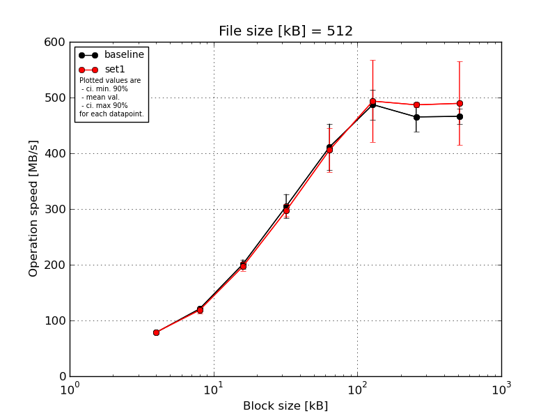
|
File size [kB] |
Block size [kB] |
| 4 |
8 |
16 |
32 |
64 |
128 |
256 |
512 |
| baseline | 512 | 80.96 | 121.84 | 211.07 | 335.98 | 435.11 | 529.61 | 498.51 | 484.58 |
| 512 | 78.41 | 118.42 | 205.59 | 300.67 | 343.41 | 453.26 | 446.03 | 461.24 |
| 512 | 80.85 | 120.51 | 204.84 | 320.28 | 417.03 | 493.12 | 492.54 | 476.65 |
| 512 | 74.89 | 120.86 | 192.31 | 282.0 | 459.52 | 472.14 | 441.24 | 456.62 |
| 512 | 78.06 | 122.55 | 191.35 | 286.03 | 401.61 | 488.3 | 447.65 | 452.09 |
| mean val. |
78.63 |
120.84 |
201.03 |
304.99 |
411.34 |
487.29 |
465.2 |
466.23 |
| standard dev. |
2.49 |
1.57 |
8.74 |
22.92 |
43.67 |
28.34 |
27.87 |
13.81 |
| ci. min. 90% |
76.27 |
119.34 |
192.7 |
283.14 |
369.7 |
460.26 |
438.63 |
453.07 |
| ci. max 90% |
81.0 |
122.33 |
209.37 |
326.85 |
452.97 |
514.31 |
491.77 |
479.4 |
| geom. mean |
78.6 |
120.83 |
200.88 |
304.31 |
409.39 |
486.63 |
464.54 |
466.07 |
| median |
78.41 |
120.86 |
204.84 |
300.67 |
417.03 |
488.3 |
447.65 |
461.24 |
| first quartile |
78.06 |
120.51 |
192.31 |
286.03 |
401.61 |
472.14 |
446.03 |
456.62 |
| third quartile |
80.85 |
121.84 |
205.59 |
320.28 |
435.11 |
493.12 |
492.54 |
476.65 |
| minimum |
74.89 |
118.42 |
191.35 |
282.0 |
343.41 |
453.26 |
441.24 |
452.09 |
| maximum |
80.96 |
122.55 |
211.07 |
335.98 |
459.52 |
529.61 |
498.51 |
484.58 |
| set1 | 512 | 79.73 | 124.68 | 209.63 | 291.04 | 447.27 | 567.44 | 491.16 | 623.45 |
| 512 | 79.15 | 114.23 | 198.97 | 316.27 | 424.88 | 527.35 | 489.32 | 430.29 |
| 512 | 75.69 | 110.62 | 190.19 | 301.93 | 338.97 | 501.97 | 490.7 | 484.91 |
| 512 | 80.59 | 121.1 | 190.39 | 287.01 | 396.83 | 363.91 | 481.13 | 432.96 |
| 512 | 79.73 | 122.25 | 195.38 | 289.67 | 421.64 | 507.19 | 482.13 | 476.1 |
| mean val. |
78.98 |
118.58 |
196.91 |
297.18 |
405.92 |
493.57 |
486.89 |
489.54 |
| standard dev. |
1.91 |
5.9 |
8.0 |
12.09 |
41.48 |
76.92 |
4.86 |
78.81 |
| ci. min. 90% |
77.16 |
112.95 |
189.28 |
285.66 |
366.37 |
420.24 |
482.25 |
414.4 |
| ci. max 90% |
80.8 |
124.2 |
204.54 |
308.71 |
445.46 |
566.91 |
491.52 |
564.68 |
| geom. mean |
78.96 |
118.46 |
196.79 |
296.99 |
404.12 |
488.17 |
486.87 |
484.92 |
| median |
79.73 |
121.1 |
195.38 |
291.04 |
421.64 |
507.19 |
489.32 |
476.1 |
| first quartile |
79.15 |
114.23 |
190.39 |
289.67 |
396.83 |
501.97 |
482.13 |
432.96 |
| third quartile |
79.73 |
122.25 |
198.97 |
301.93 |
424.88 |
527.35 |
490.7 |
484.91 |
| minimum |
75.69 |
110.62 |
190.19 |
287.01 |
338.97 |
363.91 |
481.13 |
430.29 |
| maximum |
80.59 |
124.68 |
209.63 |
316.27 |
447.27 |
567.44 |
491.16 |
623.45 |
| baseline set1 difference |
0.44 % |
-1.87 % |
-2.05 % |
-2.56 % |
-1.32 % |
1.29 % |
4.66 % |
5.0 % |
| ttest p-value |
0.8118 |
0.4319 |
0.4595 |
0.5193 |
0.8456 |
0.8681 |
0.1248 |
0.533 |
| ttest equality |
SAME |
SAME |
SAME |
SAME |
SAME |
SAME |
SAME |
SAME |
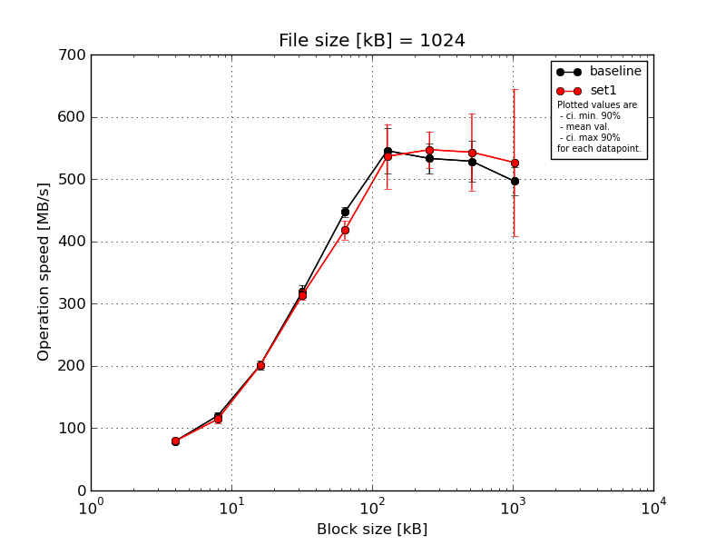
|
File size [kB] |
Block size [kB] |
| 4 |
8 |
16 |
32 |
64 |
128 |
256 |
512 |
1024 |
| baseline | 1024 | 80.12 | 113.31 | 204.88 | 335.01 | 445.41 | 590.26 | 544.09 | 503.77 | 506.08 |
| 1024 | 79.3 | 115.48 | 199.48 | 317.25 | 438.06 | 503.53 | 519.24 | 569.2 | 528.0 |
| 1024 | 81.65 | 126.66 | 206.9 | 321.33 | 450.04 | 580.06 | 573.71 | 489.71 | 493.34 |
| 1024 | 77.79 | 121.97 | 205.34 | 304.78 | 442.31 | 513.89 | 513.58 | 561.2 | 492.65 |
| 1024 | 78.38 | 123.0 | 189.86 | 318.48 | 459.56 | 539.96 | 514.9 | 519.17 | 463.62 |
| mean val. |
79.45 |
120.08 |
201.29 |
319.37 |
447.07 |
545.54 |
533.1 |
528.61 |
496.74 |
| standard dev. |
1.52 |
5.53 |
6.98 |
10.8 |
8.24 |
38.7 |
25.86 |
35.1 |
23.39 |
| ci. min. 90% |
78.0 |
114.81 |
194.64 |
309.07 |
439.22 |
508.65 |
508.45 |
495.15 |
474.43 |
| ci. max 90% |
80.9 |
125.36 |
207.95 |
329.67 |
454.93 |
582.43 |
557.76 |
562.08 |
519.04 |
| geom. mean |
79.44 |
119.98 |
201.19 |
319.22 |
447.01 |
544.45 |
532.61 |
527.68 |
496.29 |
| median |
79.3 |
121.97 |
204.88 |
318.48 |
445.41 |
539.96 |
519.24 |
519.17 |
493.34 |
| first quartile |
78.38 |
115.48 |
199.48 |
317.25 |
442.31 |
513.89 |
514.9 |
503.77 |
492.65 |
| third quartile |
80.12 |
123.0 |
205.34 |
321.33 |
450.04 |
580.06 |
544.09 |
561.2 |
506.08 |
| minimum |
77.79 |
113.31 |
189.86 |
304.78 |
438.06 |
503.53 |
513.58 |
489.71 |
463.62 |
| maximum |
81.65 |
126.66 |
206.9 |
335.01 |
459.56 |
590.26 |
573.71 |
569.2 |
528.0 |
| set1 | 1024 | 79.63 | 118.2 | 202.3 | 324.69 | 426.08 | 610.54 | 517.89 | 657.02 | 748.47 |
| 1024 | 79.69 | 119.84 | 197.51 | 311.13 | 434.25 | 548.58 | 571.76 | 520.79 | 469.49 |
| 1024 | 78.58 | 117.46 | 200.52 | 319.69 | 402.42 | 543.53 | 557.99 | 516.81 | 472.18 |
| 1024 | 81.07 | 115.86 | 201.78 | 303.59 | 426.78 | 460.37 | 511.26 | 497.03 | 476.42 |
| 1024 | 78.86 | 102.07 | 202.06 | 311.52 | 399.65 | 519.17 | 577.03 | 524.17 | 466.87 |
| mean val. |
79.57 |
114.69 |
200.83 |
314.13 |
417.84 |
536.44 |
547.19 |
543.16 |
526.69 |
| standard dev. |
0.97 |
7.2 |
1.98 |
8.21 |
15.7 |
54.25 |
30.66 |
64.52 |
124.03 |
| ci. min. 90% |
78.64 |
107.83 |
198.95 |
306.3 |
402.87 |
484.71 |
517.96 |
481.65 |
408.43 |
| ci. max 90% |
80.49 |
121.55 |
202.72 |
321.95 |
432.8 |
588.16 |
576.41 |
604.67 |
644.94 |
| geom. mean |
79.56 |
114.5 |
200.83 |
314.04 |
417.6 |
534.22 |
546.49 |
540.36 |
516.92 |
| median |
79.63 |
117.46 |
201.78 |
311.52 |
426.08 |
543.53 |
557.99 |
520.79 |
472.18 |
| first quartile |
78.86 |
115.86 |
200.52 |
311.13 |
402.42 |
519.17 |
517.89 |
516.81 |
469.49 |
| third quartile |
79.69 |
118.2 |
202.06 |
319.69 |
426.78 |
548.58 |
571.76 |
524.17 |
476.42 |
| minimum |
78.58 |
102.07 |
197.51 |
303.59 |
399.65 |
460.37 |
511.26 |
497.03 |
466.87 |
| maximum |
81.07 |
119.84 |
202.3 |
324.69 |
434.25 |
610.54 |
577.03 |
657.02 |
748.47 |
| baseline set1 difference |
0.15 % |
-4.49 % |
-0.23 % |
-1.64 % |
-6.54 % |
-1.67 % |
2.64 % |
2.75 % |
6.03 % |
| ttest p-value |
0.8874 |
0.2205 |
0.8908 |
0.4124 |
0.0062 |
0.7678 |
0.455 |
0.6695 |
0.6101 |
| ttest equality |
SAME |
SAME |
SAME |
SAME |
DIFF |
SAME |
SAME |
SAME |
SAME |
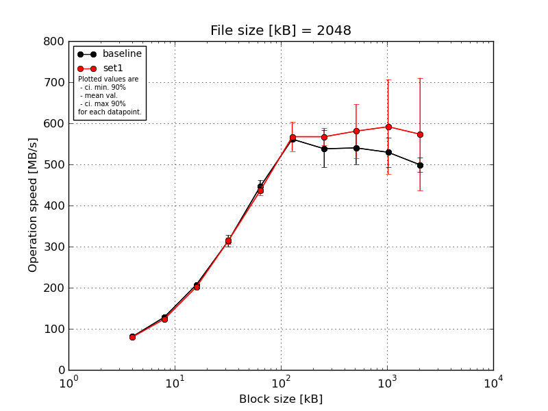
|
File size [kB] |
Block size [kB] |
| 4 |
8 |
16 |
32 |
64 |
128 |
256 |
512 |
1024 |
2048 |
| baseline | 2048 | 80.99 | 125.05 | 206.85 | 331.4 | 458.6 | 569.0 | 580.57 | 579.37 | 572.37 | 522.04 |
| 2048 | 81.85 | 129.26 | 205.21 | 309.5 | 422.67 | 561.0 | 544.08 | 473.83 | 469.48 | 514.55 |
| 2048 | 80.44 | 134.09 | 206.55 | 315.02 | 463.18 | 556.95 | 550.37 | 571.28 | 531.77 | 479.63 |
| 2048 | 80.87 | 121.85 | 205.4 | 292.78 | 446.54 | 563.87 | 456.4 | 531.77 | 542.43 | 495.64 |
| 2048 | 81.03 | 131.79 | 211.87 | 320.88 | 440.44 | 556.17 | 558.69 | 544.65 | 531.33 | 483.08 |
| mean val. |
81.04 |
128.41 |
207.18 |
313.91 |
446.29 |
561.4 |
538.02 |
540.18 |
529.48 |
498.99 |
| standard dev. |
0.51 |
4.97 |
2.72 |
14.33 |
16.04 |
5.27 |
47.67 |
41.82 |
37.47 |
18.79 |
| ci. min. 90% |
80.55 |
123.67 |
204.59 |
300.25 |
430.99 |
556.37 |
492.58 |
500.31 |
493.75 |
481.07 |
| ci. max 90% |
81.52 |
133.15 |
209.76 |
327.58 |
461.58 |
566.42 |
583.47 |
580.05 |
565.2 |
516.91 |
| geom. mean |
81.03 |
128.33 |
207.16 |
313.65 |
446.05 |
561.38 |
536.22 |
538.83 |
528.38 |
498.71 |
| median |
80.99 |
129.26 |
206.55 |
315.02 |
446.54 |
561.0 |
550.37 |
544.65 |
531.77 |
495.64 |
| first quartile |
80.87 |
125.05 |
205.4 |
309.5 |
440.44 |
556.95 |
544.08 |
531.77 |
531.33 |
483.08 |
| third quartile |
81.03 |
131.79 |
206.85 |
320.88 |
458.6 |
563.87 |
558.69 |
571.28 |
542.43 |
514.55 |
| minimum |
80.44 |
121.85 |
205.21 |
292.78 |
422.67 |
556.17 |
456.4 |
473.83 |
469.48 |
479.63 |
| maximum |
81.85 |
134.09 |
211.87 |
331.4 |
463.18 |
569.0 |
580.57 |
579.37 |
572.37 |
522.04 |
| set1 | 2048 | 80.33 | 121.57 | 198.04 | 327.0 | 456.63 | 609.96 | 595.58 | 696.85 | 806.77 | 827.13 |
| 2048 | 80.21 | 126.05 | 199.78 | 309.07 | 439.57 | 563.19 | 543.2 | 566.88 | 528.52 | 479.03 |
| 2048 | 79.63 | 128.73 | 204.33 | 305.43 | 426.17 | 598.3 | 553.86 | 515.47 | 532.04 | 538.77 |
| 2048 | 79.61 | 119.55 | 202.96 | 318.11 | 425.71 | 521.52 | 559.92 | 554.0 | 535.33 | 497.52 |
| 2048 | 80.13 | 123.3 | 203.89 | 311.61 | 433.55 | 544.23 | 584.25 | 571.59 | 556.32 | 524.65 |
| mean val. |
79.98 |
123.84 |
201.8 |
314.25 |
436.32 |
567.44 |
567.36 |
580.96 |
591.8 |
573.42 |
| standard dev. |
0.34 |
3.63 |
2.75 |
8.5 |
12.71 |
36.83 |
21.81 |
68.44 |
120.66 |
143.72 |
| ci. min. 90% |
79.66 |
120.38 |
199.18 |
306.14 |
424.21 |
532.33 |
546.57 |
515.71 |
476.76 |
436.4 |
| ci. max 90% |
80.31 |
127.3 |
204.43 |
322.35 |
448.44 |
602.55 |
588.16 |
646.21 |
706.83 |
710.44 |
| geom. mean |
79.98 |
123.8 |
201.79 |
314.15 |
436.18 |
566.48 |
567.03 |
577.95 |
583.37 |
561.31 |
| median |
80.13 |
123.3 |
202.96 |
311.61 |
433.55 |
563.19 |
559.92 |
566.88 |
535.33 |
524.65 |
| first quartile |
79.63 |
121.57 |
199.78 |
309.07 |
426.17 |
544.23 |
553.86 |
554.0 |
532.04 |
497.52 |
| third quartile |
80.21 |
126.05 |
203.89 |
318.11 |
439.57 |
598.3 |
584.25 |
571.59 |
556.32 |
538.77 |
| minimum |
79.61 |
119.55 |
198.04 |
305.43 |
425.71 |
521.52 |
543.2 |
515.47 |
528.52 |
479.03 |
| maximum |
80.33 |
128.73 |
204.33 |
327.0 |
456.63 |
609.96 |
595.58 |
696.85 |
806.77 |
827.13 |
| baseline set1 difference |
-1.3 % |
-3.56 % |
-2.59 % |
0.11 % |
-2.23 % |
1.08 % |
5.45 % |
7.55 % |
11.77 % |
14.92 % |
| ttest p-value |
0.005 |
0.1354 |
0.0145 |
0.9656 |
0.3081 |
0.7259 |
0.2461 |
0.2885 |
0.3021 |
0.284 |
| ttest equality |
DIFF |
SAME |
DIFF |
SAME |
SAME |
SAME |
SAME |
SAME |
SAME |
SAME |
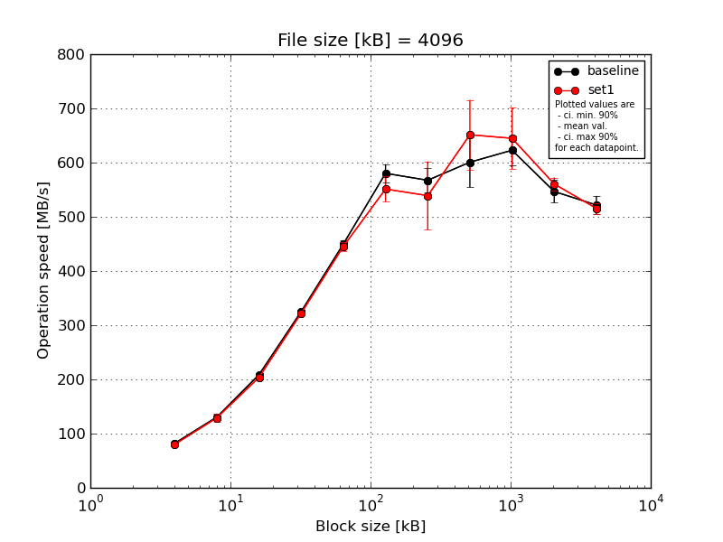
|
File size [kB] |
Block size [kB] |
| 4 |
8 |
16 |
32 |
64 |
128 |
256 |
512 |
1024 |
2048 |
4096 |
| baseline | 4096 | 82.7 | 137.33 | 212.7 | 328.68 | 461.09 | 599.43 | 604.33 | 635.12 | 651.45 | 572.98 | 543.1 |
| 4096 | 82.87 | 123.79 | 209.78 | 330.52 | 453.0 | 570.54 | 573.31 | 575.22 | 598.27 | 523.77 | 527.07 |
| 4096 | 83.54 | 134.2 | 208.24 | 322.19 | 443.12 | 559.06 | 562.51 | 642.27 | 624.41 | 545.11 | 530.36 |
| 4096 | 78.97 | 134.55 | 203.56 | 322.19 | 448.59 | 597.55 | 555.63 | 528.05 | 650.41 | 564.34 | 508.65 |
| 4096 | 82.22 | 123.25 | 209.9 | 322.89 | 443.86 | 574.63 | 541.2 | 622.86 | 589.79 | 527.22 | 499.38 |
| mean val. |
82.06 |
130.62 |
208.83 |
325.29 |
449.93 |
580.24 |
567.4 |
600.7 |
622.87 |
546.68 |
521.71 |
| standard dev. |
1.79 |
6.6 |
3.36 |
3.99 |
7.4 |
17.62 |
23.7 |
48.3 |
28.62 |
21.85 |
17.54 |
| ci. min. 90% |
80.35 |
124.33 |
205.63 |
321.49 |
442.87 |
563.44 |
544.8 |
554.66 |
595.58 |
525.85 |
504.99 |
| ci. max 90% |
83.77 |
136.92 |
212.03 |
329.1 |
456.99 |
597.04 |
589.99 |
646.75 |
650.15 |
567.51 |
538.43 |
| geom. mean |
82.04 |
130.49 |
208.81 |
325.27 |
449.88 |
580.03 |
567.01 |
599.09 |
622.34 |
546.33 |
521.48 |
| median |
82.7 |
134.2 |
209.78 |
322.89 |
448.59 |
574.63 |
562.51 |
622.86 |
624.41 |
545.11 |
527.07 |
| first quartile |
82.22 |
123.79 |
208.24 |
322.19 |
443.86 |
570.54 |
555.63 |
575.22 |
598.27 |
527.22 |
508.65 |
| third quartile |
82.87 |
134.55 |
209.9 |
328.68 |
453.0 |
597.55 |
573.31 |
635.12 |
650.41 |
564.34 |
530.36 |
| minimum |
78.97 |
123.25 |
203.56 |
322.19 |
443.12 |
559.06 |
541.2 |
528.05 |
589.79 |
523.77 |
499.38 |
| maximum |
83.54 |
137.33 |
212.7 |
330.52 |
461.09 |
599.43 |
604.33 |
642.27 |
651.45 |
572.98 |
543.1 |
| set1 | 4096 | 81.07 | 121.84 | 208.73 | 323.55 | 458.13 | 514.59 | 480.66 | 618.72 | 647.67 | 563.79 | 505.55 |
| 4096 | 79.67 | 131.31 | 205.1 | 325.52 | 434.22 | 571.82 | 535.62 | 622.37 | 626.77 | 555.1 | 513.29 |
| 4096 | 79.7 | 137.16 | 197.2 | 322.22 | 443.9 | 541.64 | 651.45 | 771.16 | 744.73 | 548.78 | 505.43 |
| 4096 | 80.15 | 134.11 | 203.44 | 318.62 | 443.8 | 553.25 | 505.11 | 633.51 | 612.29 | 554.31 | 528.6 |
| 4096 | 79.72 | 121.26 | 204.6 | 320.33 | 447.23 | 574.8 | 522.4 | 611.26 | 592.59 | 580.65 | 524.59 |
| mean val. |
80.06 |
129.13 |
203.81 |
322.05 |
445.46 |
551.22 |
539.05 |
651.41 |
644.81 |
560.53 |
515.49 |
| standard dev. |
0.6 |
7.23 |
4.19 |
2.69 |
8.59 |
24.59 |
66.11 |
67.42 |
59.38 |
12.47 |
10.72 |
| ci. min. 90% |
79.49 |
122.24 |
199.81 |
319.48 |
437.26 |
527.78 |
476.02 |
587.13 |
588.2 |
548.64 |
505.27 |
| ci. max 90% |
80.63 |
136.03 |
207.81 |
324.62 |
453.65 |
574.66 |
602.08 |
715.69 |
701.42 |
572.41 |
525.71 |
| geom. mean |
80.06 |
128.97 |
203.78 |
322.04 |
445.39 |
550.78 |
536.03 |
648.84 |
642.74 |
560.42 |
515.4 |
| median |
79.72 |
131.31 |
204.6 |
322.22 |
443.9 |
553.25 |
522.4 |
622.37 |
626.77 |
555.1 |
513.29 |
| first quartile |
79.7 |
121.84 |
203.44 |
320.33 |
443.8 |
541.64 |
505.11 |
618.72 |
612.29 |
554.31 |
505.55 |
| third quartile |
80.15 |
134.11 |
205.1 |
323.55 |
447.23 |
571.82 |
535.62 |
633.51 |
647.67 |
563.79 |
524.59 |
| minimum |
79.67 |
121.26 |
197.2 |
318.62 |
434.22 |
514.59 |
480.66 |
611.26 |
592.59 |
548.78 |
505.43 |
| maximum |
81.07 |
137.16 |
208.73 |
325.52 |
458.13 |
574.8 |
651.45 |
771.16 |
744.73 |
580.65 |
528.6 |
| baseline set1 difference |
-2.44 % |
-1.14 % |
-2.41 % |
-1.0 % |
-0.99 % |
-5.0 % |
-5.0 % |
8.44 % |
3.52 % |
2.53 % |
-1.19 % |
| ttest p-value |
0.0453 |
0.7425 |
0.0699 |
0.1701 |
0.4033 |
0.0643 |
0.3931 |
0.2088 |
0.4779 |
0.2535 |
0.5177 |
| ttest equality |
DIFF |
SAME |
DIFF |
SAME |
SAME |
DIFF |
SAME |
SAME |
SAME |
SAME |
SAME |
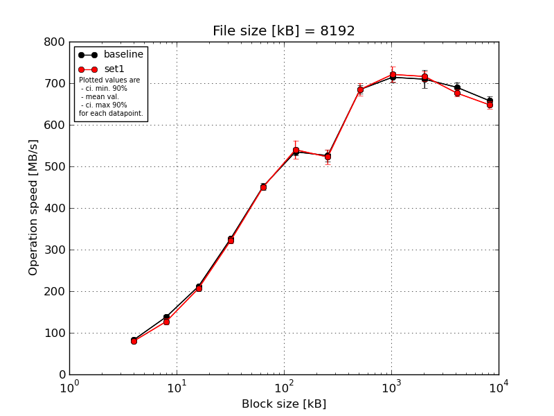
|
File size [kB] |
Block size [kB] |
| 4 |
8 |
16 |
32 |
64 |
128 |
256 |
512 |
1024 |
2048 |
4096 |
8192 |
| baseline | 8192 | 84.21 | 129.96 | 214.71 | 333.54 | 463.8 | 541.24 | 506.36 | 701.99 | 735.02 | 726.42 | 694.44 | 673.46 |
| 8192 | 83.81 | 141.56 | 207.81 | 326.0 | 456.1 | 536.23 | 516.16 | 676.08 | 709.65 | 685.05 | 705.22 | 647.41 |
| 8192 | 83.7 | 137.86 | 211.86 | 321.95 | 447.95 | 537.09 | 530.96 | 682.24 | 715.62 | 739.1 | 683.71 | 652.57 |
| 8192 | 80.92 | 140.35 | 211.05 | 326.34 | 443.61 | 542.33 | 536.26 | 677.23 | 705.71 | 693.89 | 695.34 | 652.32 |
| 8192 | 83.88 | 141.14 | 212.69 | 326.17 | 447.35 | 518.54 | 539.99 | 686.34 | 705.11 | 703.73 | 671.53 | 664.34 |
| mean val. |
83.3 |
138.17 |
211.62 |
326.8 |
451.76 |
535.08 |
525.95 |
684.78 |
714.22 |
709.64 |
690.05 |
658.02 |
| standard dev. |
1.35 |
4.81 |
2.53 |
4.19 |
8.13 |
9.61 |
14.21 |
10.46 |
12.36 |
22.57 |
12.85 |
10.64 |
| ci. min. 90% |
82.02 |
133.59 |
209.22 |
322.8 |
444.01 |
525.92 |
512.39 |
674.8 |
702.44 |
688.12 |
677.8 |
647.87 |
| ci. max 90% |
84.59 |
142.76 |
214.03 |
330.8 |
459.51 |
544.25 |
539.5 |
694.75 |
726.01 |
731.15 |
702.3 |
668.17 |
| geom. mean |
83.3 |
138.1 |
211.61 |
326.78 |
451.7 |
535.01 |
525.79 |
684.71 |
714.14 |
709.35 |
689.95 |
657.95 |
| median |
83.81 |
140.35 |
211.86 |
326.17 |
447.95 |
537.09 |
530.96 |
682.24 |
709.65 |
703.73 |
694.44 |
652.57 |
| first quartile |
83.7 |
137.86 |
211.05 |
326.0 |
447.35 |
536.23 |
516.16 |
677.23 |
705.71 |
693.89 |
683.71 |
652.32 |
| third quartile |
83.88 |
141.14 |
212.69 |
326.34 |
456.1 |
541.24 |
536.26 |
686.34 |
715.62 |
726.42 |
695.34 |
664.34 |
| minimum |
80.92 |
129.96 |
207.81 |
321.95 |
443.61 |
518.54 |
506.36 |
676.08 |
705.11 |
685.05 |
671.53 |
647.41 |
| maximum |
84.21 |
141.56 |
214.71 |
333.54 |
463.8 |
542.33 |
539.99 |
701.99 |
735.02 |
739.1 |
705.22 |
673.46 |
| set1 | 8192 | 79.42 | 121.36 | 206.24 | 329.08 | 445.58 | 576.99 | 502.95 | 685.28 | 719.87 | 727.93 | 674.42 | 658.5 |
| 8192 | 80.4 | 121.33 | 208.5 | 323.17 | 456.39 | 524.93 | 547.43 | 693.3 | 722.41 | 717.54 | 664.46 | 647.61 |
| 8192 | 80.42 | 133.26 | 206.71 | 324.52 | 448.71 | 526.11 | 534.37 | 671.14 | 690.08 | 705.4 | 674.53 | 643.55 |
| 8192 | 80.68 | 120.93 | 204.58 | 326.4 | 450.55 | 523.9 | 511.47 | 705.42 | 740.54 | 702.26 | 689.6 | 634.57 |
| 8192 | 79.97 | 138.46 | 207.43 | 308.21 | 449.59 | 548.65 | 516.9 | 669.56 | 732.46 | 727.93 | 677.84 | 656.49 |
| mean val. |
80.18 |
127.07 |
206.69 |
322.28 |
450.16 |
540.12 |
522.62 |
684.94 |
721.07 |
716.21 |
676.17 |
648.14 |
| standard dev. |
0.5 |
8.24 |
1.46 |
8.17 |
3.95 |
23.04 |
18.01 |
15.13 |
19.18 |
12.12 |
9.03 |
9.78 |
| ci. min. 90% |
79.71 |
119.21 |
205.3 |
314.49 |
446.4 |
518.15 |
505.45 |
670.51 |
702.78 |
704.65 |
667.56 |
638.82 |
| ci. max 90% |
80.65 |
134.92 |
208.08 |
330.06 |
453.93 |
562.08 |
539.79 |
699.37 |
739.36 |
727.77 |
684.78 |
657.47 |
| geom. mean |
80.18 |
126.86 |
206.69 |
322.19 |
450.15 |
539.73 |
522.38 |
684.81 |
720.86 |
716.13 |
676.12 |
648.08 |
| median |
80.4 |
121.36 |
206.71 |
324.52 |
449.59 |
526.11 |
516.9 |
685.28 |
722.41 |
717.54 |
674.53 |
647.61 |
| first quartile |
79.97 |
121.33 |
206.24 |
323.17 |
448.71 |
524.93 |
511.47 |
671.14 |
719.87 |
705.4 |
674.42 |
643.55 |
| third quartile |
80.42 |
133.26 |
207.43 |
326.4 |
450.55 |
548.65 |
534.37 |
693.3 |
732.46 |
727.93 |
677.84 |
656.49 |
| minimum |
79.42 |
120.93 |
204.58 |
308.21 |
445.58 |
523.9 |
502.95 |
669.56 |
690.08 |
702.26 |
664.46 |
634.57 |
| maximum |
80.68 |
138.46 |
208.5 |
329.08 |
456.39 |
576.99 |
547.43 |
705.42 |
740.54 |
727.93 |
689.6 |
658.5 |
| baseline set1 difference |
-3.75 % |
-8.04 % |
-2.33 % |
-1.38 % |
-0.35 % |
0.94 % |
-0.63 % |
0.02 % |
0.96 % |
0.93 % |
-2.01 % |
-1.5 % |
| ttest p-value |
0.0012 |
0.0314 |
0.0054 |
0.3025 |
0.7026 |
0.664 |
0.7543 |
0.9845 |
0.5211 |
0.5819 |
0.0835 |
0.1651 |
| ttest equality |
DIFF |
DIFF |
DIFF |
SAME |
SAME |
SAME |
SAME |
SAME |
SAME |
SAME |
DIFF |
SAME |
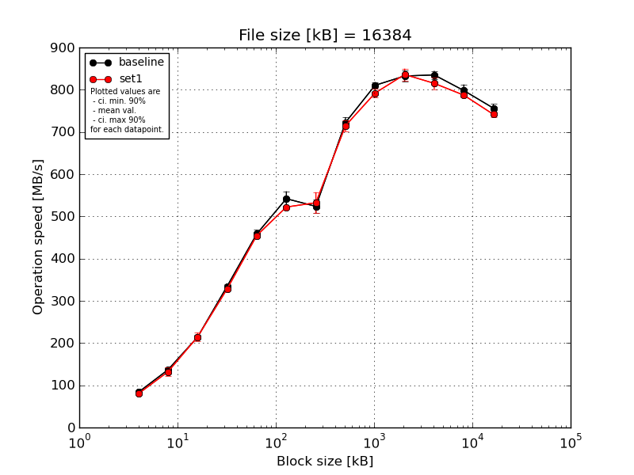
|
File size [kB] |
Block size [kB] |
| 4 |
8 |
16 |
32 |
64 |
128 |
256 |
512 |
1024 |
2048 |
4096 |
8192 |
16384 |
| baseline | 16384 | 84.56 | 136.07 | 219.27 | 339.52 | 462.87 | 560.82 | 547.1 | 745.57 | 817.54 | 856.21 | 841.66 | 818.83 | 773.62 |
| 16384 | 83.92 | 142.12 | 214.91 | 337.2 | 473.42 | 553.8 | 522.89 | 720.14 | 803.21 | 833.07 | 838.79 | 809.26 | 756.9 |
| 16384 | 84.13 | 139.08 | 215.32 | 335.63 | 452.49 | 550.19 | 527.44 | 715.08 | 820.63 | 828.93 | 817.95 | 785.28 | 753.29 |
| 16384 | 80.75 | 140.06 | 206.91 | 328.68 | 455.17 | 526.13 | 498.8 | 713.39 | 802.2 | 824.57 | 834.37 | 788.88 | 750.08 |
| 16384 | 84.24 | 126.53 | 214.56 | 332.31 | 448.59 | 518.76 | 522.33 | 718.1 | 808.57 | 819.67 | 842.51 | 788.05 | 747.95 |
| mean val. |
83.52 |
136.77 |
214.19 |
334.67 |
458.51 |
541.94 |
523.71 |
722.46 |
810.43 |
832.49 |
835.06 |
798.06 |
756.37 |
| standard dev. |
1.56 |
6.13 |
4.49 |
4.25 |
9.83 |
18.39 |
17.21 |
13.18 |
8.34 |
14.17 |
10.08 |
15.04 |
10.22 |
| ci. min. 90% |
82.03 |
130.93 |
209.91 |
330.62 |
449.13 |
524.41 |
507.31 |
709.89 |
802.48 |
818.98 |
825.45 |
783.72 |
746.62 |
| ci. max 90% |
85.01 |
142.61 |
218.48 |
338.72 |
467.88 |
559.47 |
540.12 |
735.03 |
818.38 |
846.0 |
844.66 |
812.4 |
766.11 |
| geom. mean |
83.51 |
136.66 |
214.15 |
334.65 |
458.42 |
541.69 |
523.49 |
722.36 |
810.4 |
832.39 |
835.01 |
797.95 |
756.31 |
| median |
84.13 |
139.08 |
214.91 |
335.63 |
455.17 |
550.19 |
522.89 |
718.1 |
808.57 |
828.93 |
838.79 |
788.88 |
753.29 |
| first quartile |
83.92 |
136.07 |
214.56 |
332.31 |
452.49 |
526.13 |
522.33 |
715.08 |
803.21 |
824.57 |
834.37 |
788.05 |
750.08 |
| third quartile |
84.24 |
140.06 |
215.32 |
337.2 |
462.87 |
553.8 |
527.44 |
720.14 |
817.54 |
833.07 |
841.66 |
809.26 |
756.9 |
| minimum |
80.75 |
126.53 |
206.91 |
328.68 |
448.59 |
518.76 |
498.8 |
713.39 |
802.2 |
819.67 |
817.95 |
785.28 |
747.95 |
| maximum |
84.56 |
142.12 |
219.27 |
339.52 |
473.42 |
560.82 |
547.1 |
745.57 |
820.63 |
856.21 |
842.51 |
818.83 |
773.62 |
| set1 | 16384 | 80.51 | 126.89 | 208.28 | 325.13 | 453.37 | 520.09 | 507.71 | 701.45 | 784.39 | 842.19 | 822.83 | 784.47 | 736.78 |
| 16384 | 80.09 | 142.83 | 206.39 | 328.3 | 456.14 | 521.8 | 516.15 | 706.93 | 786.43 | 818.03 | 822.71 | 783.7 | 744.6 |
| 16384 | 79.75 | 142.98 | 228.12 | 330.01 | 456.19 | 526.02 | 532.04 | 730.8 | 781.67 | 857.16 | 829.66 | 787.75 | 743.25 |
| 16384 | 80.6 | 123.46 | 223.7 | 330.25 | 457.17 | 519.75 | 575.15 | 705.9 | 805.64 | 833.21 | 805.73 | 784.66 | 732.63 |
| 16384 | 79.18 | 124.23 | 206.5 | 327.9 | 450.3 | 523.03 | 531.21 | 728.83 | 802.24 | 829.7 | 794.57 | 795.19 | 750.68 |
| mean val. |
80.03 |
132.08 |
214.6 |
328.32 |
454.63 |
522.14 |
532.45 |
714.78 |
792.07 |
836.06 |
815.1 |
787.15 |
741.59 |
| standard dev. |
0.58 |
9.97 |
10.47 |
2.06 |
2.81 |
2.54 |
25.99 |
13.89 |
11.03 |
14.63 |
14.48 |
4.75 |
7.03 |
| ci. min. 90% |
79.47 |
122.58 |
204.61 |
326.36 |
451.96 |
519.71 |
507.67 |
701.54 |
781.56 |
822.11 |
801.29 |
782.62 |
734.88 |
| ci. max 90% |
80.58 |
141.58 |
224.58 |
330.28 |
457.31 |
524.56 |
557.23 |
728.03 |
802.59 |
850.01 |
828.91 |
791.68 |
748.29 |
| geom. mean |
80.02 |
131.78 |
214.39 |
328.31 |
454.63 |
522.13 |
531.95 |
714.67 |
792.01 |
835.96 |
814.99 |
787.14 |
741.56 |
| median |
80.09 |
126.89 |
208.28 |
328.3 |
456.14 |
521.8 |
531.21 |
706.93 |
786.43 |
833.21 |
822.71 |
784.66 |
743.25 |
| first quartile |
79.75 |
124.23 |
206.5 |
327.9 |
453.37 |
520.09 |
516.15 |
705.9 |
784.39 |
829.7 |
805.73 |
784.47 |
736.78 |
| third quartile |
80.51 |
142.83 |
223.7 |
330.01 |
456.19 |
523.03 |
532.04 |
728.83 |
802.24 |
842.19 |
822.83 |
787.75 |
744.6 |
| minimum |
79.18 |
123.46 |
206.39 |
325.13 |
450.3 |
519.75 |
507.71 |
701.45 |
781.67 |
818.03 |
794.57 |
783.7 |
732.63 |
| maximum |
80.6 |
142.98 |
228.12 |
330.25 |
457.17 |
526.02 |
575.15 |
730.8 |
805.64 |
857.16 |
829.66 |
795.19 |
750.68 |
| baseline set1 difference |
-4.18 % |
-3.43 % |
0.19 % |
-1.9 % |
-0.84 % |
-3.65 % |
1.67 % |
-1.06 % |
-2.27 % |
0.43 % |
-2.39 % |
-1.37 % |
-1.95 % |
| ttest p-value |
0.0016 |
0.3959 |
0.9388 |
0.0169 |
0.4218 |
0.0442 |
0.5483 |
0.3963 |
0.0179 |
0.7053 |
0.0353 |
0.1606 |
0.0286 |
| ttest equality |
DIFF |
SAME |
SAME |
DIFF |
SAME |
DIFF |
SAME |
SAME |
DIFF |
SAME |
DIFF |
SAME |
DIFF |

|
File size [kB] |
Block size [kB] |
| 64 |
128 |
256 |
512 |
1024 |
2048 |
4096 |
8192 |
16384 |
| baseline | 32768 | 486.02 | 564.27 | 522.76 | 771.97 | 895.6 | 916.46 | 933.62 | 921.9 | 882.98 |
| 32768 | 474.87 | 529.37 | 541.08 | 758.62 | 880.09 | 914.58 | 924.19 | 915.33 | 886.65 |
| 32768 | 477.13 | 539.13 | 533.88 | 759.54 | 862.0 | 917.53 | 917.06 | 920.13 | 872.75 |
| 32768 | 453.86 | 525.55 | 529.49 | 745.22 | 853.33 | 897.16 | 904.62 | 898.52 | 849.19 |
| 32768 | 473.36 | 529.13 | 545.53 | 734.33 | 860.93 | 910.8 | 919.41 | 923.47 | 878.73 |
| mean val. |
473.05 |
537.49 |
534.55 |
753.94 |
870.39 |
911.31 |
919.78 |
915.87 |
874.06 |
| standard dev. |
11.8 |
15.8 |
9.06 |
14.48 |
17.18 |
8.31 |
10.59 |
10.17 |
14.83 |
| ci. min. 90% |
461.8 |
522.43 |
525.91 |
740.13 |
854.01 |
903.38 |
909.68 |
906.18 |
859.92 |
| ci. max 90% |
484.29 |
552.55 |
543.19 |
767.74 |
886.77 |
919.23 |
929.88 |
925.56 |
888.2 |
| geom. mean |
472.93 |
537.31 |
534.49 |
753.82 |
870.26 |
911.28 |
919.73 |
915.82 |
873.96 |
| median |
474.87 |
529.37 |
533.88 |
758.62 |
862.0 |
914.58 |
919.41 |
920.13 |
878.73 |
| first quartile |
473.36 |
529.13 |
529.49 |
745.22 |
860.93 |
910.8 |
917.06 |
915.33 |
872.75 |
| third quartile |
477.13 |
539.13 |
541.08 |
759.54 |
880.09 |
916.46 |
924.19 |
921.9 |
882.98 |
| minimum |
453.86 |
525.55 |
522.76 |
734.33 |
853.33 |
897.16 |
904.62 |
898.52 |
849.19 |
| maximum |
486.02 |
564.27 |
545.53 |
771.97 |
895.6 |
917.53 |
933.62 |
923.47 |
886.65 |
| set1 | 32768 | 464.83 | 525.43 | 544.6 | 743.6 | 863.4 | 914.1 | 901.69 | 886.82 | 857.13 |
| 32768 | 459.57 | 525.37 | 522.82 | 750.27 | 864.42 | 903.45 | 894.23 | 879.7 | 856.63 |
| 32768 | 465.8 | 531.11 | 520.27 | 744.71 | 863.68 | 914.02 | 916.46 | 893.33 | 865.78 |
| 32768 | 455.78 | 523.15 | 532.11 | 739.85 | 867.8 | 902.45 | 880.02 | 883.91 | 844.48 |
| 32768 | 453.66 | 524.67 | 521.44 | 753.81 | 862.6 | 910.67 | 896.48 | 879.07 | 859.54 |
| mean val. |
459.93 |
525.95 |
528.25 |
746.45 |
864.38 |
908.94 |
897.78 |
884.56 |
856.71 |
| standard dev. |
5.36 |
3.03 |
10.27 |
5.56 |
2.02 |
5.65 |
13.17 |
5.83 |
7.75 |
| ci. min. 90% |
454.81 |
523.06 |
518.46 |
741.15 |
862.46 |
903.55 |
885.22 |
879.0 |
849.33 |
| ci. max 90% |
465.04 |
528.84 |
538.04 |
751.75 |
866.3 |
914.33 |
910.33 |
890.13 |
864.1 |
| geom. mean |
459.9 |
525.94 |
528.17 |
746.43 |
864.38 |
908.93 |
897.7 |
884.55 |
856.68 |
| median |
459.57 |
525.37 |
522.82 |
744.71 |
863.68 |
910.67 |
896.48 |
883.91 |
857.13 |
| first quartile |
455.78 |
524.67 |
521.44 |
743.6 |
863.4 |
903.45 |
894.23 |
879.7 |
856.63 |
| third quartile |
464.83 |
525.43 |
532.11 |
750.27 |
864.42 |
914.02 |
901.69 |
886.82 |
859.54 |
| minimum |
453.66 |
523.15 |
520.27 |
739.85 |
862.6 |
902.45 |
880.02 |
879.07 |
844.48 |
| maximum |
465.8 |
531.11 |
544.6 |
753.81 |
867.8 |
914.1 |
916.46 |
893.33 |
865.78 |
| baseline set1 difference |
-2.77 % |
-2.15 % |
-1.18 % |
-0.99 % |
-0.69 % |
-0.26 % |
-2.39 % |
-3.42 % |
-1.98 % |
| ttest p-value |
0.0533 |
0.1474 |
0.3335 |
0.3119 |
0.4594 |
0.6128 |
0.0196 |
0.0003 |
0.0491 |
| ttest equality |
DIFF |
SAME |
SAME |
SAME |
SAME |
SAME |
DIFF |
DIFF |
DIFF |
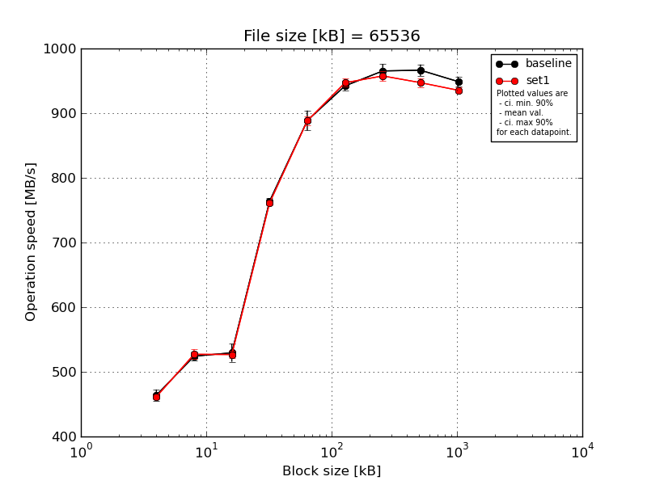
|
File size [kB] |
Block size [kB] |
| 64 |
128 |
256 |
512 |
1024 |
2048 |
4096 |
8192 |
16384 |
| baseline | 65536 | 479.71 | 529.87 | 541.28 | 765.88 | 910.67 | 949.08 | 979.81 | 981.67 | 961.64 |
| 65536 | 457.08 | 531.42 | 521.04 | 763.66 | 877.85 | 942.44 | 972.07 | 965.55 | 949.83 |
| 65536 | 463.1 | 519.08 | 535.78 | 769.37 | 892.36 | 943.19 | 965.34 | 966.4 | 946.76 |
| 65536 | 457.25 | 514.64 | 507.96 | 756.71 | 868.35 | 929.34 | 957.52 | 957.18 | 945.0 |
| 65536 | 461.9 | 525.82 | 541.22 | 763.29 | 893.84 | 947.11 | 951.73 | 961.39 | 940.84 |
| mean val. |
463.81 |
524.17 |
529.46 |
763.78 |
888.61 |
942.23 |
965.29 |
966.44 |
948.82 |
| standard dev. |
9.29 |
7.15 |
14.59 |
4.63 |
16.23 |
7.71 |
11.19 |
9.27 |
7.87 |
| ci. min. 90% |
454.95 |
517.35 |
515.55 |
759.36 |
873.14 |
934.88 |
954.62 |
957.6 |
941.31 |
| ci. max 90% |
472.67 |
530.98 |
543.36 |
768.2 |
904.09 |
949.58 |
975.96 |
975.28 |
956.32 |
| geom. mean |
463.73 |
524.13 |
529.29 |
763.77 |
888.5 |
942.2 |
965.24 |
966.4 |
948.79 |
| median |
461.9 |
525.82 |
535.78 |
763.66 |
892.36 |
943.19 |
965.34 |
965.55 |
946.76 |
| first quartile |
457.25 |
519.08 |
521.04 |
763.29 |
877.85 |
942.44 |
957.52 |
961.39 |
945.0 |
| third quartile |
463.1 |
529.87 |
541.22 |
765.88 |
893.84 |
947.11 |
972.07 |
966.4 |
949.83 |
| minimum |
457.08 |
514.64 |
507.96 |
756.71 |
868.35 |
929.34 |
951.73 |
957.18 |
940.84 |
| maximum |
479.71 |
531.42 |
541.28 |
769.37 |
910.67 |
949.08 |
979.81 |
981.67 |
961.64 |
| set1 | 65536 | 461.48 | 520.87 | 525.58 | 767.95 | 888.37 | 945.76 | 960.58 | 941.95 | 927.27 |
| 65536 | 460.65 | 517.72 | 517.54 | 762.36 | 895.98 | 956.88 | 942.96 | 943.03 | 936.52 |
| 65536 | 467.0 | 537.49 | 526.06 | 759.04 | 882.14 | 938.53 | 964.68 | 959.28 | 937.96 |
| 65536 | 462.52 | 530.75 | 530.62 | 757.59 | 893.9 | 945.0 | 960.58 | 946.74 | 939.09 |
| 65536 | 455.82 | 528.59 | 534.0 | 758.38 | 880.71 | 948.94 | 959.06 | 944.94 | 936.03 |
| mean val. |
461.5 |
527.08 |
526.76 |
761.06 |
888.22 |
947.02 |
957.58 |
947.19 |
935.37 |
| standard dev. |
4.01 |
7.91 |
6.21 |
4.25 |
6.82 |
6.68 |
8.43 |
7.0 |
4.69 |
| ci. min. 90% |
457.67 |
519.54 |
520.84 |
757.01 |
881.72 |
940.65 |
949.54 |
940.51 |
930.9 |
| ci. max 90% |
465.32 |
534.63 |
532.68 |
765.12 |
894.72 |
953.39 |
965.61 |
953.86 |
939.85 |
| geom. mean |
461.48 |
527.04 |
526.73 |
761.05 |
888.2 |
947.0 |
957.55 |
947.17 |
935.37 |
| median |
461.48 |
528.59 |
526.06 |
759.04 |
888.37 |
945.76 |
960.58 |
944.94 |
936.52 |
| first quartile |
460.65 |
520.87 |
525.58 |
758.38 |
882.14 |
945.0 |
959.06 |
943.03 |
936.03 |
| third quartile |
462.52 |
530.75 |
530.62 |
762.36 |
893.9 |
948.94 |
960.58 |
946.74 |
937.96 |
| minimum |
455.82 |
517.72 |
517.54 |
757.59 |
880.71 |
938.53 |
942.96 |
941.95 |
927.27 |
| maximum |
467.0 |
537.49 |
534.0 |
767.95 |
895.98 |
956.88 |
964.68 |
959.28 |
939.09 |
| baseline set1 difference |
-0.5 % |
0.56 % |
-0.51 % |
-0.36 % |
-0.04 % |
0.51 % |
-0.8 % |
-1.99 % |
-1.42 % |
| ttest p-value |
0.6231 |
0.5574 |
0.7137 |
0.3623 |
0.9612 |
0.3244 |
0.2531 |
0.006 |
0.0112 |
| ttest equality |
SAME |
SAME |
SAME |
SAME |
SAME |
SAME |
SAME |
DIFF |
DIFF |
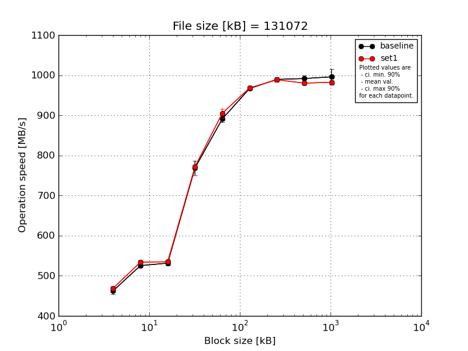
|
File size [kB] |
Block size [kB] |
| 64 |
128 |
256 |
512 |
1024 |
2048 |
4096 |
8192 |
16384 |
| baseline | 131072 | 478.06 | 532.5 | 542.79 | 763.54 | 903.62 | 970.51 | 991.35 | 1001.6 | 997.6 |
| 131072 | 461.86 | 523.49 | 527.33 | 761.1 | 891.97 | 969.51 | 984.59 | 990.25 | 982.2 |
| 131072 | 461.13 | 523.5 | 526.13 | 759.92 | 894.62 | 968.66 | 990.89 | 995.23 | 988.78 |
| 131072 | 456.64 | 525.19 | 535.06 | 802.63 | 886.11 | 965.64 | 997.77 | 990.28 | 1030.38 |
| 131072 | 454.8 | 522.0 | 526.8 | 756.2 | 879.02 | 959.68 | 983.28 | 981.36 | 980.94 |
| mean val. |
462.5 |
525.33 |
531.62 |
768.68 |
891.07 |
966.8 |
989.57 |
991.75 |
995.98 |
| standard dev. |
9.19 |
4.16 |
7.22 |
19.16 |
9.23 |
4.38 |
5.84 |
7.44 |
20.33 |
| ci. min. 90% |
453.74 |
521.37 |
524.74 |
750.41 |
882.27 |
962.63 |
984.0 |
984.65 |
976.6 |
| ci. max 90% |
471.26 |
529.3 |
538.5 |
786.95 |
899.87 |
970.98 |
995.14 |
998.84 |
1015.37 |
| geom. mean |
462.43 |
525.32 |
531.58 |
768.49 |
891.03 |
966.79 |
989.56 |
991.72 |
995.82 |
| median |
461.13 |
523.5 |
527.33 |
761.1 |
891.97 |
968.66 |
990.89 |
990.28 |
988.78 |
| first quartile |
456.64 |
523.49 |
526.8 |
759.92 |
886.11 |
965.64 |
984.59 |
990.25 |
982.2 |
| third quartile |
461.86 |
525.19 |
535.06 |
763.54 |
894.62 |
969.51 |
991.35 |
995.23 |
997.6 |
| minimum |
454.8 |
522.0 |
526.13 |
756.2 |
879.02 |
959.68 |
983.28 |
981.36 |
980.94 |
| maximum |
478.06 |
532.5 |
542.79 |
802.63 |
903.62 |
970.51 |
997.77 |
1001.6 |
1030.38 |
| set1 | 131072 | 475.73 | 540.79 | 540.79 | 774.71 | 918.33 | 972.07 | 982.95 | 976.64 | 981.08 |
| 131072 | 467.7 | 530.12 | 534.17 | 768.33 | 885.49 | 967.62 | 990.93 | 976.34 | 982.2 |
| 131072 | 471.56 | 529.8 | 538.21 | 773.41 | 907.99 | 972.11 | 992.84 | 983.11 | 990.88 |
| 131072 | 469.02 | 538.04 | 535.76 | 773.03 | 910.81 | 968.52 | 989.79 | 984.75 | 982.19 |
| 131072 | 460.37 | 530.75 | 526.52 | 769.35 | 903.02 | 961.24 | 986.96 | 980.68 | 976.02 |
| mean val. |
468.88 |
533.9 |
535.09 |
771.77 |
905.13 |
968.31 |
988.69 |
980.3 |
982.47 |
| standard dev. |
5.66 |
5.14 |
5.41 |
2.77 |
12.3 |
4.45 |
3.85 |
3.77 |
5.35 |
| ci. min. 90% |
463.48 |
529.0 |
529.93 |
769.13 |
893.4 |
964.07 |
985.02 |
976.7 |
977.38 |
| ci. max 90% |
474.27 |
538.8 |
540.25 |
774.4 |
916.85 |
972.55 |
992.37 |
983.9 |
987.57 |
| geom. mean |
468.85 |
533.88 |
535.07 |
771.76 |
905.06 |
968.3 |
988.69 |
980.3 |
982.46 |
| median |
469.02 |
530.75 |
535.76 |
773.03 |
907.99 |
968.52 |
989.79 |
980.68 |
982.19 |
| first quartile |
467.7 |
530.12 |
534.17 |
769.35 |
903.02 |
967.62 |
986.96 |
976.64 |
981.08 |
| third quartile |
471.56 |
538.04 |
538.21 |
773.41 |
910.81 |
972.07 |
990.93 |
983.11 |
982.2 |
| minimum |
460.37 |
529.8 |
526.52 |
768.33 |
885.49 |
961.24 |
982.95 |
976.34 |
976.02 |
| maximum |
475.73 |
540.79 |
540.79 |
774.71 |
918.33 |
972.11 |
992.84 |
984.75 |
990.88 |
| baseline set1 difference |
1.38 % |
1.63 % |
0.65 % |
0.4 % |
1.58 % |
0.16 % |
-0.09 % |
-1.15 % |
-1.36 % |
| ttest p-value |
0.2229 |
0.02 |
0.4149 |
0.7307 |
0.0751 |
0.6034 |
0.7856 |
0.0154 |
0.1888 |
| ttest equality |
SAME |
DIFF |
SAME |
SAME |
DIFF |
SAME |
SAME |
DIFF |
SAME |
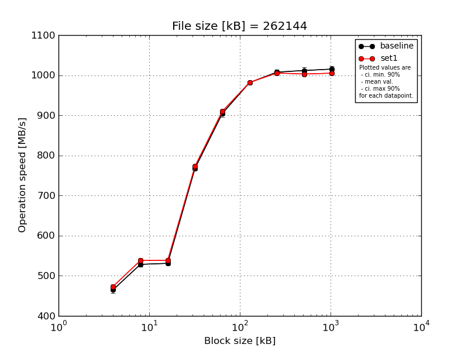
|
File size [kB] |
Block size [kB] |
| 64 |
128 |
256 |
512 |
1024 |
2048 |
4096 |
8192 |
16384 |
| baseline | 262144 | 481.51 | 532.65 | 537.64 | 775.92 | 918.39 | 984.61 | 1015.78 | 1024.0 | 1026.82 |
| 262144 | 463.77 | 527.72 | 527.91 | 767.64 | 904.47 | 982.62 | 1012.74 | 1012.21 | 1014.12 |
| 262144 | 462.22 | 526.0 | 532.91 | 767.67 | 902.66 | 980.98 | 1008.01 | 1015.31 | 1018.02 |
| 262144 | 457.82 | 535.85 | 528.31 | 764.67 | 899.08 | 978.75 | 998.07 | 1002.09 | 1007.62 |
| 262144 | 460.35 | 519.91 | 528.54 | 763.01 | 897.55 | 981.11 | 1004.11 | 1005.19 | 1009.58 |
| mean val. |
465.13 |
528.43 |
531.06 |
767.78 |
904.43 |
981.61 |
1007.74 |
1011.76 |
1015.23 |
| standard dev. |
9.42 |
6.16 |
4.2 |
4.97 |
8.28 |
2.17 |
7.01 |
8.65 |
7.63 |
| ci. min. 90% |
456.16 |
522.55 |
527.06 |
763.05 |
896.54 |
979.55 |
1001.06 |
1003.51 |
1007.95 |
| ci. max 90% |
474.11 |
534.3 |
535.06 |
772.52 |
912.32 |
983.68 |
1014.42 |
1020.01 |
1022.51 |
| geom. mean |
465.06 |
528.4 |
531.05 |
767.77 |
904.4 |
981.61 |
1007.72 |
1011.73 |
1015.21 |
| median |
462.22 |
527.72 |
528.54 |
767.64 |
902.66 |
981.11 |
1008.01 |
1012.21 |
1014.12 |
| first quartile |
460.35 |
526.0 |
528.31 |
764.67 |
899.08 |
980.98 |
1004.11 |
1005.19 |
1009.58 |
| third quartile |
463.77 |
532.65 |
532.91 |
767.67 |
904.47 |
982.62 |
1012.74 |
1015.31 |
1018.02 |
| minimum |
457.82 |
519.91 |
527.91 |
763.01 |
897.55 |
978.75 |
998.07 |
1002.09 |
1007.62 |
| maximum |
481.51 |
535.85 |
537.64 |
775.92 |
918.39 |
984.61 |
1015.78 |
1024.0 |
1026.82 |
| set1 | 262144 | 480.87 | 544.97 | 547.94 | 775.51 | 916.78 | 980.91 | 1006.9 | 1002.76 | 1004.75 |
| 262144 | 470.96 | 535.68 | 537.83 | 772.62 | 913.11 | 983.48 | 1001.02 | 1000.89 | 1006.75 |
| 262144 | 477.76 | 528.76 | 540.08 | 774.1 | 908.61 | 983.0 | 1007.81 | 1008.0 | 1011.31 |
| 262144 | 471.29 | 541.07 | 530.82 | 771.37 | 904.99 | 980.23 | 1005.28 | 1003.55 | 1001.61 |
| 262144 | 466.88 | 540.04 | 535.38 | 771.79 | 906.96 | 982.3 | 1006.49 | 999.57 | 1001.0 |
| mean val. |
473.55 |
538.1 |
538.41 |
773.08 |
910.09 |
981.98 |
1005.5 |
1002.95 |
1005.09 |
| standard dev. |
5.65 |
6.18 |
6.34 |
1.71 |
4.79 |
1.38 |
2.66 |
3.22 |
4.2 |
| ci. min. 90% |
468.16 |
532.21 |
532.37 |
771.45 |
905.52 |
980.67 |
1002.96 |
999.88 |
1001.08 |
| ci. max 90% |
478.94 |
544.0 |
544.45 |
774.71 |
914.66 |
983.3 |
1008.04 |
1006.03 |
1009.09 |
| geom. mean |
473.52 |
538.08 |
538.38 |
773.08 |
910.08 |
981.98 |
1005.5 |
1002.95 |
1005.08 |
| median |
471.29 |
540.04 |
537.83 |
772.62 |
908.61 |
982.3 |
1006.49 |
1002.76 |
1004.75 |
| first quartile |
470.96 |
535.68 |
535.38 |
771.79 |
906.96 |
980.91 |
1005.28 |
1000.89 |
1001.61 |
| third quartile |
477.76 |
541.07 |
540.08 |
774.1 |
913.11 |
983.0 |
1006.9 |
1003.55 |
1006.75 |
| minimum |
466.88 |
528.76 |
530.82 |
771.37 |
904.99 |
980.23 |
1001.02 |
999.57 |
1001.0 |
| maximum |
480.87 |
544.97 |
547.94 |
775.51 |
916.78 |
983.48 |
1007.81 |
1008.0 |
1011.31 |
| baseline set1 difference |
1.81 % |
1.83 % |
1.38 % |
0.69 % |
0.63 % |
0.04 % |
-0.22 % |
-0.87 % |
-1.0 % |
| ttest p-value |
0.125 |
0.0382 |
0.0627 |
0.0541 |
0.2222 |
0.7557 |
0.5231 |
0.0654 |
0.0314 |
| ttest equality |
SAME |
DIFF |
DIFF |
DIFF |
SAME |
SAME |
SAME |
DIFF |
DIFF |
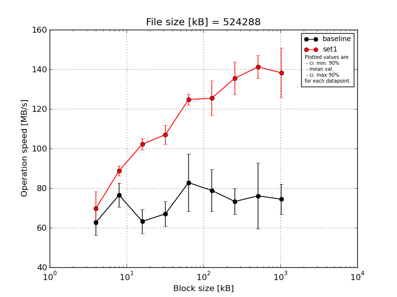
|
File size [kB] |
Block size [kB] |
| 64 |
128 |
256 |
512 |
1024 |
2048 |
4096 |
8192 |
16384 |
| baseline | 524288 | 52.75 | 72.51 | 64.33 | 68.26 | 73.72 | 84.53 | 69.33 | 69.09 | 70.7 |
| 524288 | 69.79 | 69.09 | 60.04 | 60.75 | 65.09 | 68.37 | 69.4 | 68.84 | 71.11 |
| 524288 | 65.34 | 86.0 | 73.87 | 71.28 | 105.44 | 81.61 | 77.13 | 107.27 | 77.54 |
| 524288 | 58.84 | 78.23 | 58.67 | 59.79 | 86.25 | 66.77 | 83.43 | 68.45 | 86.63 |
| 524288 | 66.99 | 76.67 | 59.04 | 74.91 | 83.29 | 92.88 | 66.86 | 66.9 | 65.93 |
| mean val. |
62.74 |
76.5 |
63.19 |
67.0 |
82.76 |
78.83 |
73.23 |
76.11 |
74.38 |
| standard dev. |
6.88 |
6.4 |
6.38 |
6.59 |
15.17 |
11.09 |
6.89 |
17.44 |
8.0 |
| ci. min. 90% |
56.18 |
70.39 |
57.11 |
60.72 |
68.29 |
68.25 |
66.66 |
59.48 |
66.76 |
| ci. max 90% |
69.31 |
82.6 |
69.28 |
73.28 |
97.22 |
89.41 |
79.79 |
92.74 |
82.0 |
| geom. mean |
62.43 |
76.29 |
62.95 |
66.74 |
81.68 |
78.2 |
72.98 |
74.77 |
74.05 |
| median |
65.34 |
76.67 |
60.04 |
68.26 |
83.29 |
81.61 |
69.4 |
68.84 |
71.11 |
| first quartile |
58.84 |
72.51 |
59.04 |
60.75 |
73.72 |
68.37 |
69.33 |
68.45 |
70.7 |
| third quartile |
66.99 |
78.23 |
64.33 |
71.28 |
86.25 |
84.53 |
77.13 |
69.09 |
77.54 |
| minimum |
52.75 |
69.09 |
58.67 |
59.79 |
65.09 |
66.77 |
66.86 |
66.9 |
65.93 |
| maximum |
69.79 |
86.0 |
73.87 |
74.91 |
105.44 |
92.88 |
83.43 |
107.27 |
86.63 |
| set1 | 524288 | 54.16 | 86.71 | 99.48 | 98.28 | 121.22 | 125.67 | 129.85 | 130.71 | 140.38 |
| 524288 | 73.44 | 90.1 | 104.39 | 109.5 | 124.18 | 109.68 | 142.5 | 141.83 | 148.16 |
| 524288 | 72.51 | 90.22 | 102.62 | 108.87 | 123.8 | 131.6 | 140.54 | 145.36 | 144.34 |
| 524288 | 73.16 | 91.52 | 105.57 | 111.27 | 129.44 | 131.77 | 141.5 | 143.65 | 142.83 |
| 524288 | 75.67 | 85.06 | 98.84 | 107.0 | 124.99 | 128.42 | 123.03 | 144.8 | 115.5 |
| mean val. |
69.79 |
88.72 |
102.18 |
106.98 |
124.73 |
125.43 |
135.48 |
141.27 |
138.24 |
| standard dev. |
8.82 |
2.71 |
2.96 |
5.1 |
2.99 |
9.15 |
8.63 |
6.05 |
13.02 |
| ci. min. 90% |
61.38 |
86.14 |
99.36 |
102.12 |
121.88 |
116.7 |
127.25 |
135.5 |
125.83 |
| ci. max 90% |
78.19 |
91.31 |
105.0 |
111.85 |
127.57 |
134.16 |
143.71 |
147.04 |
150.66 |
| geom. mean |
69.28 |
88.69 |
102.15 |
106.88 |
124.7 |
125.15 |
135.26 |
141.16 |
137.71 |
| median |
73.16 |
90.1 |
102.62 |
108.87 |
124.18 |
128.42 |
140.54 |
143.65 |
142.83 |
| first quartile |
72.51 |
86.71 |
99.48 |
107.0 |
123.8 |
125.67 |
129.85 |
141.83 |
140.38 |
| third quartile |
73.44 |
90.22 |
104.39 |
109.5 |
124.99 |
131.6 |
141.5 |
144.8 |
144.34 |
| minimum |
54.16 |
85.06 |
98.84 |
98.28 |
121.22 |
109.68 |
123.03 |
130.71 |
115.5 |
| maximum |
75.67 |
91.52 |
105.57 |
111.27 |
129.44 |
131.77 |
142.5 |
145.36 |
148.16 |
| baseline set1 difference |
11.23 % |
15.98 % |
61.7 % |
59.68 % |
50.71 % |
59.11 % |
85.01 % |
85.61 % |
85.86 % |
| ttest p-value |
0.1967 |
0.0044 |
0.0 |
0.0 |
0.0003 |
0.0001 |
0.0 |
0.0 |
0.0 |
| ttest equality |
SAME |
DIFF |
DIFF |
DIFF |
DIFF |
DIFF |
DIFF |
DIFF |
DIFF |
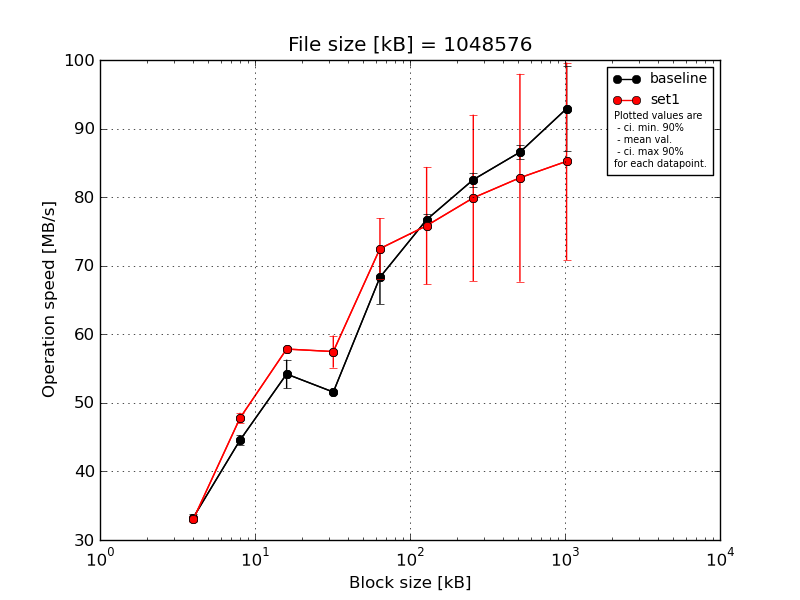
|
File size [kB] |
Block size [kB] |
| 64 |
128 |
256 |
512 |
1024 |
2048 |
4096 |
8192 |
16384 |
| baseline | 1048576 | 33.27 | 45.43 | 56.6 | 51.52 | 67.82 | 75.63 | 80.75 | 85.02 | 89.36 |
| 1048576 | 34.04 | 45.12 | 52.44 | 51.61 | 66.34 | 76.28 | 82.87 | 87.54 | 89.56 |
| 1048576 | 33.36 | 44.72 | 52.89 | 51.71 | 64.39 | 76.88 | 82.57 | 86.82 | 90.11 |
| 1048576 | 32.81 | 43.94 | 52.47 | 51.46 | 67.84 | 76.76 | 83.34 | 87.39 | 104.41 |
| 1048576 | 32.89 | 43.57 | 56.61 | 51.57 | 75.2 | 78.03 | 83.22 | 86.03 | 91.08 |
| mean val. |
33.28 |
44.56 |
54.2 |
51.57 |
68.31 |
76.72 |
82.55 |
86.56 |
92.9 |
| standard dev. |
0.49 |
0.79 |
2.2 |
0.09 |
4.1 |
0.88 |
1.05 |
1.04 |
6.46 |
| ci. min. 90% |
32.81 |
43.81 |
52.1 |
51.48 |
64.41 |
75.87 |
81.55 |
85.57 |
86.74 |
| ci. max 90% |
33.74 |
45.31 |
56.3 |
51.66 |
72.22 |
77.56 |
83.55 |
87.55 |
99.07 |
| geom. mean |
33.27 |
44.55 |
54.17 |
51.57 |
68.22 |
76.71 |
82.55 |
86.55 |
92.74 |
| median |
33.27 |
44.72 |
52.89 |
51.57 |
67.82 |
76.76 |
82.87 |
86.82 |
90.11 |
| first quartile |
32.89 |
43.94 |
52.47 |
51.52 |
66.34 |
76.28 |
82.57 |
86.03 |
89.56 |
| third quartile |
33.36 |
45.12 |
56.6 |
51.61 |
67.84 |
76.88 |
83.22 |
87.39 |
91.08 |
| minimum |
32.81 |
43.57 |
52.44 |
51.46 |
64.39 |
75.63 |
80.75 |
85.02 |
89.36 |
| maximum |
34.04 |
45.43 |
56.61 |
51.71 |
75.2 |
78.03 |
83.34 |
87.54 |
104.41 |
| set1 | 1048576 | 32.34 | 48.07 | 58.28 | 58.75 | 69.63 | 70.38 | 70.67 | 72.81 | 75.71 |
| 1048576 | 33.21 | 48.35 | 57.47 | 53.18 | 70.17 | 72.76 | 78.95 | 80.24 | 83.07 |
| 1048576 | 32.95 | 48.16 | 58.17 | 59.19 | 70.35 | 71.67 | 72.67 | 74.15 | 77.01 |
| 1048576 | 33.52 | 46.36 | 57.57 | 57.83 | 80.77 | 91.82 | 101.97 | 110.82 | 111.79 |
| 1048576 | 33.1 | 47.96 | 57.74 | 58.44 | 71.54 | 72.56 | 75.22 | 76.1 | 78.56 |
| mean val. |
33.02 |
47.78 |
57.85 |
57.48 |
72.49 |
75.84 |
79.9 |
82.82 |
85.23 |
| standard dev. |
0.43 |
0.81 |
0.36 |
2.45 |
4.68 |
8.99 |
12.72 |
15.9 |
15.1 |
| ci. min. 90% |
32.61 |
47.01 |
57.5 |
55.14 |
68.03 |
67.27 |
67.77 |
67.67 |
70.83 |
| ci. max 90% |
33.44 |
48.55 |
58.19 |
59.82 |
76.95 |
84.4 |
92.03 |
97.98 |
99.63 |
| geom. mean |
33.02 |
47.78 |
57.85 |
57.44 |
72.38 |
75.45 |
79.17 |
81.76 |
84.28 |
| median |
33.1 |
48.07 |
57.74 |
58.44 |
70.35 |
72.56 |
75.22 |
76.1 |
78.56 |
| first quartile |
32.95 |
47.96 |
57.57 |
57.83 |
70.17 |
71.67 |
72.67 |
74.15 |
77.01 |
| third quartile |
33.21 |
48.16 |
58.17 |
58.75 |
71.54 |
72.76 |
78.95 |
80.24 |
83.07 |
| minimum |
32.34 |
46.36 |
57.47 |
53.18 |
69.63 |
70.38 |
70.67 |
72.81 |
75.71 |
| maximum |
33.52 |
48.35 |
58.28 |
59.19 |
80.77 |
91.82 |
101.97 |
110.82 |
111.79 |
| baseline set1 difference |
-0.76 % |
7.24 % |
6.72 % |
11.45 % |
6.12 % |
-1.15 % |
-3.22 % |
-4.31 % |
-8.26 % |
| ttest p-value |
0.4112 |
0.0002 |
0.0065 |
0.0007 |
0.1714 |
0.8332 |
0.6544 |
0.6144 |
0.3266 |
| ttest equality |
SAME |
DIFF |
DIFF |
DIFF |
SAME |
SAME |
SAME |
SAME |
SAME |

|
File size [kB] |
Block size [kB] |
| 64 |
128 |
256 |
512 |
1024 |
2048 |
4096 |
8192 |
16384 |
| baseline | 2097152 | 28.22 | 38.67 | 47.97 | 48.12 | 65.91 | 76.32 | 85.57 | 86.22 | 93.22 |
| 2097152 | 27.78 | 38.95 | 48.4 | 48.54 | 65.82 | 76.28 | 90.96 | 85.08 | 97.42 |
| 2097152 | 28.2 | 38.26 | 48.45 | 48.38 | 65.88 | 76.04 | 85.77 | 90.2 | 93.6 |
| 2097152 | 27.44 | 39.02 | 47.91 | 49.23 | 62.93 | 80.57 | 79.97 | 89.61 | 94.39 |
| 2097152 | 27.45 | 38.97 | 47.71 | 48.56 | 65.77 | 75.92 | 81.48 | 89.97 | 89.6 |
| mean val. |
27.82 |
38.77 |
48.09 |
48.56 |
65.26 |
77.03 |
84.75 |
88.22 |
93.65 |
| standard dev. |
0.39 |
0.32 |
0.32 |
0.41 |
1.31 |
1.99 |
4.3 |
2.39 |
2.8 |
| ci. min. 90% |
27.45 |
38.47 |
47.78 |
48.17 |
64.02 |
75.13 |
80.65 |
85.94 |
90.98 |
| ci. max 90% |
28.19 |
39.08 |
48.39 |
48.96 |
66.51 |
78.92 |
88.85 |
90.49 |
96.32 |
| geom. mean |
27.82 |
38.77 |
48.09 |
48.56 |
65.25 |
77.01 |
84.66 |
88.19 |
93.61 |
| median |
27.78 |
38.95 |
47.97 |
48.54 |
65.82 |
76.28 |
85.57 |
89.61 |
93.6 |
| first quartile |
27.45 |
38.67 |
47.91 |
48.38 |
65.77 |
76.04 |
81.48 |
86.22 |
93.22 |
| third quartile |
28.2 |
38.97 |
48.4 |
48.56 |
65.88 |
76.32 |
85.77 |
89.97 |
94.39 |
| minimum |
27.44 |
38.26 |
47.71 |
48.12 |
62.93 |
75.92 |
79.97 |
85.08 |
89.6 |
| maximum |
28.22 |
39.02 |
48.45 |
49.23 |
65.91 |
80.57 |
90.96 |
90.2 |
97.42 |
| set1 | 2097152 | 27.59 | 40.02 | 49.81 | 50.09 | 64.85 | 70.56 | 75.97 | 79.36 | 83.67 |
| 2097152 | 28.21 | 39.32 | 49.82 | 50.11 | 69.07 | 80.04 | 91.73 | 97.31 | 101.87 |
| 2097152 | 27.45 | 39.72 | 49.9 | 49.96 | 65.7 | 74.6 | 81.62 | 84.78 | 89.83 |
| 2097152 | 27.57 | 39.92 | 49.66 | 50.0 | 64.94 | 71.01 | 76.29 | 78.48 | 82.55 |
| 2097152 | 27.48 | 40.07 | 49.69 | 50.15 | 64.82 | 70.44 | 76.08 | 78.73 | 81.88 |
| mean val. |
27.66 |
39.81 |
49.78 |
50.06 |
65.87 |
73.33 |
80.34 |
83.73 |
87.96 |
| standard dev. |
0.31 |
0.31 |
0.1 |
0.08 |
1.82 |
4.12 |
6.8 |
8.02 |
8.39 |
| ci. min. 90% |
27.36 |
39.52 |
49.68 |
49.99 |
64.14 |
69.4 |
73.85 |
76.08 |
79.96 |
| ci. max 90% |
27.96 |
40.1 |
49.87 |
50.14 |
67.61 |
77.26 |
86.82 |
91.38 |
95.96 |
| geom. mean |
27.66 |
39.81 |
49.78 |
50.06 |
65.85 |
73.24 |
80.12 |
83.44 |
87.65 |
| median |
27.57 |
39.92 |
49.81 |
50.09 |
64.94 |
71.01 |
76.29 |
79.36 |
83.67 |
| first quartile |
27.48 |
39.72 |
49.69 |
50.0 |
64.85 |
70.56 |
76.08 |
78.73 |
82.55 |
| third quartile |
27.59 |
40.02 |
49.82 |
50.11 |
65.7 |
74.6 |
81.62 |
84.78 |
89.83 |
| minimum |
27.45 |
39.32 |
49.66 |
49.96 |
64.82 |
70.44 |
75.97 |
78.48 |
81.88 |
| maximum |
28.21 |
40.07 |
49.9 |
50.15 |
69.07 |
80.04 |
91.73 |
97.31 |
101.87 |
| baseline set1 difference |
-0.57 % |
2.67 % |
3.52 % |
3.09 % |
0.94 % |
-4.8 % |
-5.21 % |
-5.09 % |
-6.08 % |
| ttest p-value |
0.4951 |
0.0008 |
0.0 |
0.0 |
0.5596 |
0.1088 |
0.2549 |
0.2647 |
0.1883 |
| ttest equality |
SAME |
DIFF |
DIFF |
DIFF |
SAME |
SAME |
SAME |
SAME |
SAME |
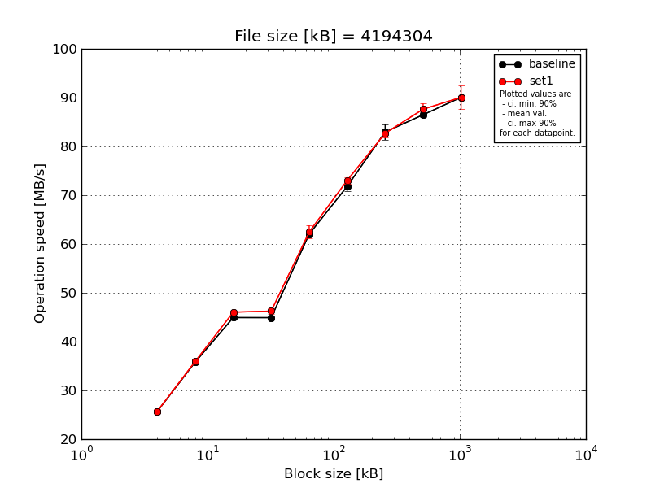
|
File size [kB] |
Block size [kB] |
| 64 |
128 |
256 |
512 |
1024 |
2048 |
4096 |
8192 |
16384 |
| baseline | 4194304 | 25.51 | 35.88 | 45.12 | 44.88 | 62.57 | 73.65 | 81.13 | 85.94 | 90.1 |
| 4194304 | 25.89 | 35.87 | 45.03 | 44.91 | 61.97 | 71.42 | 81.06 | 86.32 | 90.05 |
| 4194304 | 25.75 | 35.45 | 44.77 | 44.96 | 61.95 | 71.4 | 84.04 | 86.59 | 89.92 |
| 4194304 | 25.66 | 35.92 | 45.05 | 44.9 | 61.84 | 71.25 | 84.4 | 87.25 | 90.24 |
| 4194304 | 25.67 | 35.96 | 44.64 | 44.91 | 61.84 | 71.3 | 84.1 | 86.31 | 89.96 |
| mean val. |
25.69 |
35.82 |
44.92 |
44.91 |
62.03 |
71.8 |
82.95 |
86.48 |
90.05 |
| standard dev. |
0.14 |
0.21 |
0.21 |
0.03 |
0.3 |
1.04 |
1.69 |
0.49 |
0.13 |
| ci. min. 90% |
25.56 |
35.62 |
44.73 |
44.88 |
61.74 |
70.82 |
81.33 |
86.02 |
89.93 |
| ci. max 90% |
25.83 |
36.01 |
45.12 |
44.94 |
62.32 |
72.79 |
84.56 |
86.95 |
90.17 |
| geom. mean |
25.69 |
35.82 |
44.92 |
44.91 |
62.03 |
71.8 |
82.93 |
86.48 |
90.05 |
| median |
25.67 |
35.88 |
45.03 |
44.91 |
61.95 |
71.4 |
84.04 |
86.32 |
90.05 |
| first quartile |
25.66 |
35.87 |
44.77 |
44.9 |
61.84 |
71.3 |
81.13 |
86.31 |
89.96 |
| third quartile |
25.75 |
35.92 |
45.05 |
44.91 |
61.97 |
71.42 |
84.1 |
86.59 |
90.1 |
| minimum |
25.51 |
35.45 |
44.64 |
44.88 |
61.84 |
71.25 |
81.06 |
85.94 |
89.92 |
| maximum |
25.89 |
35.96 |
45.12 |
44.96 |
62.57 |
73.65 |
84.4 |
87.25 |
90.24 |
| set1 | 4194304 | 26.1 | 35.95 | 46.36 | 46.22 | 60.27 | 72.53 | 83.11 | 88.24 | 90.3 |
| 4194304 | 25.71 | 36.53 | 45.54 | 45.33 | 64.15 | 74.1 | 84.1 | 89.4 | 93.07 |
| 4194304 | 25.4 | 35.67 | 46.38 | 46.6 | 62.07 | 72.77 | 81.56 | 86.19 | 88.52 |
| 4194304 | 25.35 | 35.86 | 45.85 | 46.56 | 63.07 | 73.39 | 82.54 | 86.95 | 91.69 |
| 4194304 | 26.12 | 35.81 | 46.04 | 46.56 | 62.74 | 72.42 | 82.17 | 87.31 | 86.71 |
| mean val. |
25.74 |
35.96 |
46.03 |
46.25 |
62.46 |
73.04 |
82.7 |
87.62 |
90.06 |
| standard dev. |
0.37 |
0.33 |
0.36 |
0.54 |
1.43 |
0.7 |
0.97 |
1.24 |
2.52 |
| ci. min. 90% |
25.38 |
35.64 |
45.7 |
45.74 |
61.09 |
72.37 |
81.77 |
86.44 |
87.66 |
| ci. max 90% |
26.09 |
36.28 |
46.37 |
46.77 |
63.83 |
73.71 |
83.62 |
88.8 |
92.46 |
| geom. mean |
25.73 |
35.96 |
46.03 |
46.25 |
62.45 |
73.04 |
82.69 |
87.61 |
90.03 |
| median |
25.71 |
35.86 |
46.04 |
46.56 |
62.74 |
72.77 |
82.54 |
87.31 |
90.3 |
| first quartile |
25.4 |
35.81 |
45.85 |
46.22 |
62.07 |
72.53 |
82.17 |
86.95 |
88.52 |
| third quartile |
26.1 |
35.95 |
46.36 |
46.56 |
63.07 |
73.39 |
83.11 |
88.24 |
91.69 |
| minimum |
25.35 |
35.67 |
45.54 |
45.33 |
60.27 |
72.42 |
81.56 |
86.19 |
86.71 |
| maximum |
26.12 |
36.53 |
46.38 |
46.6 |
64.15 |
74.1 |
84.1 |
89.4 |
93.07 |
| baseline set1 difference |
0.16 % |
0.41 % |
2.47 % |
2.99 % |
0.69 % |
1.72 % |
-0.3 % |
1.31 % |
0.01 % |
| ttest p-value |
0.8226 |
0.429 |
0.0003 |
0.0006 |
0.5338 |
0.058 |
0.7802 |
0.0926 |
0.9961 |
| ttest equality |
SAME |
SAME |
DIFF |
DIFF |
SAME |
DIFF |
SAME |
DIFF |
SAME |